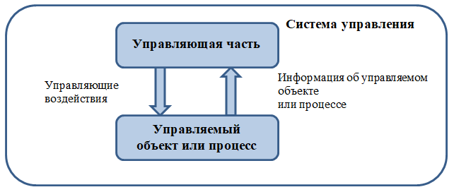

<div class="interactivity-content-container" style="height: 504px;"><div class="interactivity-content"><div class="side-by-side-view" style="height: 486px;"><div class="side-by-side-view__visualizer" style="left: 0px; width: 30%; height: 100%;"><div class="glossary-list-view"><div class="items-container-wrapper"><div class="glossary-list-visualizer-group__title glossary-list-visualizer-group__title_sticked" style="display: none; top: 0px;">И</div><div class="scrollable-container" style="overflow: hidden; height: 468px;"><div class="scrollable-container__content-container"><div class="glossary-list-visualizer-group glossary-list-visualizer-group_disabled-groups" style=""><div class="glossary-list-visualizer-item" aria-selected="false">Используемые&nbsp;в&nbsp;тексте&nbsp;аббревиатуры</div></div><div class="glossary-list-visualizer-group glossary-list-visualizer-group_disabled-groups" style=""><div class="glossary-list-visualizer-group__title" style="display: none;">Т</div><div class="glossary-list-visualizer-item" aria-selected="true">Тема&nbsp;1.&nbsp;Предметно-ориентированные&nbsp;информационные&nbsp;системы,&nbsp;их&nbsp;предназначение&nbsp;и&nbsp;задачи</div></div></div></div><div class="vertical-scrollbar" style="opacity: 0; display: none;"><div class="vertical-scrollbar__up" disabled=""></div><div class="thumb" style="height: 0px; top: 0px;"><div class="thumb__background"></div></div><div class="vertical-scrollbar__down" disabled=""></div></div></div></div><div class="separator-line"></div></div><div class="side-by-side-view__description side-by-side-view__description_border" style="right: 0px; width: 70%; height: 100%;"><div class="scrollable-container side-by-side-description" style="overflow: hidden;"><div class="scrollable-container__content-container"><div class="simple-item-content" style=""><div class="simple-item-content__title"><p style="line-height:1.15em;padding-top:0em;padding-bottom:0em;font-size:24px;font-family:fnt2_55124, Arial, Serif, Sans-Serif;font-weight:normal;font-style:normal"><span style="font-size:24px;font-family:fnt2_55124, Arial, Serif, Sans-Serif;font-weight:normal;font-style:normal;">Тема 1. Предметно-ориентированные информационные системы, их предназначение и задачи</span></p></div><div class="simple-item-content__content"><div class="rich-text"><p style="text-align:justify;line-height:1.5em;padding-top:0.4em;padding-bottom:0.8em;font-size:14px;font-family:fnt0_55124,fnt1_55124, Arial, Serif, Sans-Serif;font-weight:normal;font-style:normal"><span style="font-size:14px;font-family:fnt0_55124,fnt1_55124, Arial, Serif, Sans-Serif;font-weight:normal;font-style:normal;">Информатизация является важнейшей составной частью деятельности общества в целом и включает следующие основные направления:</span></p><ul><li style="text-align:justify;line-height:1.275em;padding-top:0.4em;padding-bottom:0em;font-size:14px;font-family:fnt0_55124,fnt1_55124, Arial, Serif, Sans-Serif;font-weight:normal;font-style:normal"><span style="font-size:14px;font-family:fnt0_55124,fnt1_55124, Arial, Serif, Sans-Serif;font-weight:normal;font-style:normal;">сбор, накопление, интеграцию, обобществление и комплексное использование информационных ресурсов;</span></li><li style="text-align:justify;line-height:1.275em;padding-top:0.5249999999999999em;padding-bottom:0em;font-size:14px;font-family:fnt0_55124,fnt1_55124, Arial, Serif, Sans-Serif;font-weight:normal;font-style:normal"><span style="font-size:14px;font-family:fnt0_55124,fnt1_55124, Arial, Serif, Sans-Serif;font-weight:normal;font-style:normal;">организация и рационализация рабочих процессов на основе использования современных информационных компьютерных и телекоммуникационных технологий;</span></li><li style="text-align:justify;line-height:1.275em;padding-top:0.5249999999999999em;padding-bottom:0em;font-size:14px;font-family:fnt0_55124,fnt1_55124, Arial, Serif, Sans-Serif;font-weight:normal;font-style:normal"><span style="font-size:14px;font-family:fnt0_55124,fnt1_55124, Arial, Serif, Sans-Serif;font-weight:normal;font-style:normal;">использование экономико-математических методов, моделирования и исследования операций и средств аналитической обработки данных для планирования и управления ресурсами;</span></li><li style="text-align:justify;line-height:1.275em;padding-top:0.5249999999999999em;padding-bottom:0.8em;font-size:14px;font-family:fnt0_55124,fnt1_55124, Arial, Serif, Sans-Serif;font-weight:normal;font-style:normal"><span style="font-size:14px;font-family:fnt0_55124,fnt1_55124, Arial, Serif, Sans-Serif;font-weight:normal;font-style:normal;">развитие информационно-технологической инфраструктуры отрасли: сети информационно-вычислительных центров, локальных вычислительных сетей учреждений, телекоммуникационной сети на основе каналов связи общего пользования.</span></li></ul><p style="text-align:justify;line-height:1.5em;padding-top:0.4em;padding-bottom:0.8em;font-size:14px;font-family:fnt0_55124,fnt1_55124, Arial, Serif, Sans-Serif;font-weight:normal;font-style:normal"><span style="font-size:14px;font-family:fnt0_55124,fnt1_55124, Arial, Serif, Sans-Serif;font-weight:normal;font-style:normal;">Интеграция информационных ресурсов и технологий позволяет обнаружить определенные закономерности в развитии информационных технологий. Современные сферы применения компьютеров можно разделить на четыре уровня:</span></p><ul><li style="text-align:justify;line-height:1.275em;padding-top:0.4em;padding-bottom:0em;font-size:14px;font-family:fnt0_55124,fnt1_55124, Arial, Serif, Sans-Serif;font-weight:normal;font-style:normal"><span style="font-size:14px;font-family:fnt0_55124,fnt1_55124, Arial, Serif, Sans-Serif;font-weight:normal;font-style:normal;">выполнение вычислений (Computation);</span></li><li style="text-align:justify;line-height:1.275em;padding-top:0.5249999999999999em;padding-bottom:0em;font-size:14px;font-family:fnt0_55124,fnt1_55124, Arial, Serif, Sans-Serif;font-weight:normal;font-style:normal"><span style="font-size:14px;font-family:fnt0_55124,fnt1_55124, Arial, Serif, Sans-Serif;font-weight:normal;font-style:normal;">обработка, в том числе аналитическая, структурированных данных,</span></li><li style="text-align:justify;line-height:1.275em;padding-top:0.5249999999999999em;padding-bottom:0em;font-size:14px;font-family:fnt0_55124,fnt1_55124, Arial, Serif, Sans-Serif;font-weight:normal;font-style:normal"><span style="font-size:14px;font-family:fnt0_55124,fnt1_55124, Arial, Serif, Sans-Serif;font-weight:normal;font-style:normal;">формирование и использование баз (банков) данных (Data Base);</span></li><li style="text-align:justify;line-height:1.275em;padding-top:0.5249999999999999em;padding-bottom:0em;font-size:14px;font-family:fnt0_55124,fnt1_55124, Arial, Serif, Sans-Serif;font-weight:normal;font-style:normal"><span style="font-size:14px;font-family:fnt0_55124,fnt1_55124, Arial, Serif, Sans-Serif;font-weight:normal;font-style:normal;">коммуникации – это прежде всего Интернет и все, что с ним связано (Communication);</span></li><li style="text-align:justify;line-height:1.275em;padding-top:0.5249999999999999em;padding-bottom:0.8em;font-size:14px;font-family:fnt0_55124,fnt1_55124, Arial, Serif, Sans-Serif;font-weight:normal;font-style:normal"><span style="font-size:14px;font-family:fnt0_55124,fnt1_55124, Arial, Serif, Sans-Serif;font-weight:normal;font-style:normal;">работа со знаниями – уровень, ориентированный на поддержку мыслительной, интеллектуальной деятельности, управление знаниями (Cognition, Knowledge Management).</span></li></ul><p style="text-align:justify;line-height:1.5em;padding-top:0.4em;padding-bottom:0.8em;font-size:14px;font-family:fnt0_55124,fnt1_55124, Arial, Serif, Sans-Serif;font-weight:normal;font-style:normal"><span style="font-size:14px;font-family:fnt0_55124,fnt1_55124, Arial, Serif, Sans-Serif;font-weight:normal;font-style:normal;">Для предметно-ориентированных видов деятельности, к которым относится любая сфера деятельности человека, современные информационные технологии предоставляют принципиально новые возможности, в том числе:</span></p><p style="text-align:justify;line-height:1.5em;padding-top:0.4em;padding-bottom:0.8em;font-size:14px;font-family:fnt0_55124,fnt1_55124, Arial, Serif, Sans-Serif;font-weight:normal;font-style:normal"><span style="font-size:14px;font-family:fnt0_55124,fnt1_55124, Arial, Serif, Sans-Serif;font-weight:normal;font-style:normal;">а) возможность простой, быстрой организации временных, виртуальных коллективов (рабочих групп) для решения вновь возникающих задач; появляются новые формы организации рабочих процессов, которые обеспечиваются и поддерживаются взаимодействием через сеть (в том числе работа на дому);</span></p><p style="text-align:justify;line-height:1.5em;padding-top:0.4em;padding-bottom:0.8em;font-size:14px;font-family:fnt0_55124,fnt1_55124, Arial, Serif, Sans-Serif;font-weight:normal;font-style:normal"><span style="font-size:14px;font-family:fnt0_55124,fnt1_55124, Arial, Serif, Sans-Serif;font-weight:normal;font-style:normal;">б) удаленный доступ мобильных пользователей к «центральным» информационным и вычислительным ресурсам информационно-технологической системы организации, учреждения, предприятия;</span></p><p style="text-align:justify;line-height:1.5em;padding-top:0.4em;padding-bottom:0.8em;font-size:14px;font-family:fnt0_55124,fnt1_55124, Arial, Serif, Sans-Serif;font-weight:normal;font-style:normal"><span style="font-size:14px;font-family:fnt0_55124,fnt1_55124, Arial, Serif, Sans-Serif;font-weight:normal;font-style:normal;">в) возможность мониторинга и управления рабочими процессами в распределенной системе (новые возможности для менеджмента: учет, контроль, воздействие – адекватная мотивация исполнителей), что является одним из существенных факторов эффективности менеджмента.</span></p><p style="text-align:justify;line-height:1.5em;padding-top:0.4em;padding-bottom:0.8em;font-size:14px;font-family:fnt0_55124,fnt1_55124, Arial, Serif, Sans-Serif;font-weight:normal;font-style:normal"><span style="font-size:14px;font-family:fnt0_55124,fnt1_55124, Arial, Serif, Sans-Serif;font-weight:normal;font-style:normal;">Реализация этих возможностей связана с необходимостью специфического инжиниринга (проектирования) и реинжиниринга рабочих процессов и адекватной оргструктуры. Специфика в основном заключается в обеспечении защиты потоков информации от несанкционированного доступа. При этом виртуальная организация может применяться как для повторяющегося, рутинного, циклического (итеративного) производства, так и при реализации уникальных (единичных, разовых) проектов (мероприятий, разовых задач).</span></p><p style="text-align:justify;line-height:1.5em;padding-top:0.4em;padding-bottom:0.8em;font-size:14px;font-family:fnt0_55124,fnt1_55124, Arial, Serif, Sans-Serif;font-weight:normal;font-style:normal"><span style="font-size:14px;font-family:fnt0_55124,fnt1_55124, Arial, Serif, Sans-Serif;font-weight:normal;font-style:normal;">Существенными, с точки зрения организации и осуществления управления информационными процессами любой сферы деятельности человека, являются особенности, связанные с «человеческим фактором», среди которых необходимо указать следующие:</span></p><ul><li style="text-align:justify;line-height:1.275em;padding-top:0.4em;padding-bottom:0em;font-size:14px;font-family:fnt0_55124,fnt1_55124, Arial, Serif, Sans-Serif;font-weight:normal;font-style:normal"><span style="font-size:14px;font-family:fnt0_55124,fnt1_55124, Arial, Serif, Sans-Serif;font-weight:normal;font-style:normal;">из всех видов технологий информационная технология предъявляет самые высокие требования к «человеческому фактору», оказывая принципиальное влияние на квалификацию, содержание труда, физическую и умственную нагрузку, профессиональные перспективы и уровень социальных отношений в коллективе;</span></li><li style="text-align:justify;line-height:1.275em;padding-top:0.5249999999999999em;padding-bottom:0em;font-size:14px;font-family:fnt0_55124,fnt1_55124, Arial, Serif, Sans-Serif;font-weight:normal;font-style:normal"><span style="font-size:14px;font-family:fnt0_55124,fnt1_55124, Arial, Serif, Sans-Serif;font-weight:normal;font-style:normal;">имеет место активируемый эффект от использования компьютерных информационных технологий (положительная обратная связь). Эффект от внедрения компьютерных технологий не определен раз и навсегда, а зависит от активности пользователей, уровня их обучения, применения новых программ, интеграции в сети и т. д. Можно говорить о своего рода активируемом пользователем эффекте. Такой подход к компьютеру побуждает не только к разовой покупке и установке программного обеспечения техники, но и к более или менее регулярной активности в этом направлении. С этой точки зрения в программно-аппаратных средствах важны не только текущие, но и потенциальные будущие возможности;</span></li><li style="text-align:justify;line-height:1.275em;padding-top:0.5249999999999999em;padding-bottom:0.8em;font-size:14px;font-family:fnt0_55124,fnt1_55124, Arial, Serif, Sans-Serif;font-weight:normal;font-style:normal"><span style="font-size:14px;font-family:fnt0_55124,fnt1_55124, Arial, Serif, Sans-Serif;font-weight:normal;font-style:normal;">естественный процесс развития информационно-ориентированного компьютерного сознания предопределяет необходимость психологической адаптации пользователей к возможностям новой информационной технологии, после чего она может быть эффективно применена и становится критически необходимой для обеспечения рабочих процессов. Для ускорения адаптации должны быть и положительные стимулы, и административное давление.</span></li></ul><p style="text-align:justify;line-height:1.5em;padding-top:0.4em;padding-bottom:0.8em;font-size:14px;font-family:fnt0_55124,fnt1_55124, Arial, Serif, Sans-Serif;font-weight:normal;font-style:normal"><span style="font-size:14px;font-family:fnt0_55124,fnt1_55124, Arial, Serif, Sans-Serif;font-weight:normal;font-style:normal;">Особенностями информационных ресурсов как объектов учета, защиты и управления являются их «нематериальность», объективная сложность определения их стоимости, простота копирования, тиражирования и распространения. Кроме того, информационные ресурсы, представленные в виде баз данных, и программное обеспечение являются объектами авторского и имущественного права.</span></p><p style="text-align:justify;line-height:1.5em;padding-top:0.4em;padding-bottom:0.8em;font-size:14px;font-family:fnt0_55124,fnt1_55124, Arial, Serif, Sans-Serif;font-weight:normal;font-style:normal"><span style="font-size:14px;font-family:fnt0_55124,fnt1_55124, Arial, Serif, Sans-Serif;font-weight:normal;font-style:normal;">Таким образом, информатизация любой сферы деятельности человека – это многоаспектный, системообразующий процесс, в основе которого – создание и комплексное использование информационных ресурсов и автоматизированных информационных технологий. </span></p><p style="text-align:justify;line-height:1.5em;padding-top:0.4em;padding-bottom:0.8em;font-size:14px;font-family:fnt0_55124,fnt1_55124, Arial, Serif, Sans-Serif;font-weight:normal;font-style:normal"><span style="font-size:14px;font-family:fnt0_55124,fnt1_55124, Arial, Serif, Sans-Serif;font-weight:normal;font-style:normal;">Информационная технология – также системное понятие, которое включает методы обработки информации, организационно-управленческие и методические концепции ее формирования и использования, а также совокупность всех видов информационной техники, включая программное обеспечение. При этом «системность» в данном случае определяет не только многоаспектность и комплексность информационной технологии, но и наше отношение к ней, которое выражается в необходимости всестороннего учета организационно-методических и социально-психологических факторов при проектировании и управлении рабочими процессами, реализуемыми с помощью информационных технологий.</span></p><p style="text-align:justify;line-height:1.5em;padding-top:0.4em;padding-bottom:0.8em;font-size:14px;font-family:fnt0_55124,fnt1_55124, Arial, Serif, Sans-Serif;font-weight:normal;font-style:normal"><span style="font-size:14px;font-family:fnt0_55124,fnt1_55124, Arial, Serif, Sans-Serif;font-weight:normal;font-style:normal;">Эффективность информатизации в значительной степени определяется уровнем взаимодействия и сотрудничества специалистов информационных служб с работниками других подразделений организации, органов управления и других организаций.</span></p><p style="text-align:justify;line-height:1.5em;padding-top:0.4em;padding-bottom:0.8em;font-size:14px;font-family:fnt0_55124,fnt1_55124, Arial, Serif, Sans-Serif;font-weight:normal;font-style:normal"><span style="font-size:14px;font-family:fnt0_55124,fnt1_55124, Arial, Serif, Sans-Serif;font-weight:normal;font-style:normal;">Информатизация – это комплексный и непрерывный процесс. Наряду с компьютеризацией, внедрением и широким использованием информационного и программного обеспечения и средств телекоммуникации, она предполагает также:</span></p><ul><li style="text-align:justify;line-height:1.275em;padding-top:0.4em;padding-bottom:0em;font-size:14px;font-family:fnt0_55124,fnt1_55124, Arial, Serif, Sans-Serif;font-weight:normal;font-style:normal"><span style="font-size:14px;font-family:fnt0_55124,fnt1_55124, Arial, Serif, Sans-Serif;font-weight:normal;font-style:normal;">систематическое проведение организационно- и функционально-стоимостного анализа рабочих процессов и информационных потоков по всем основным направлениям деятельности;</span></li><li style="text-align:justify;line-height:1.275em;padding-top:0.5249999999999999em;padding-bottom:0em;font-size:14px;font-family:fnt0_55124,fnt1_55124, Arial, Serif, Sans-Serif;font-weight:normal;font-style:normal"><span style="font-size:14px;font-family:fnt0_55124,fnt1_55124, Arial, Serif, Sans-Serif;font-weight:normal;font-style:normal;">поиск вариантов их упорядочения, рационализации и сокращения расходов за счет горизонтальной и вертикальной кооперации, централизации, исключения дублирования работ и функций, внедрения конвейерных и многопотоковых схем обработки информации и т. д.</span></li><li style="text-align:justify;line-height:1.275em;padding-top:0.5249999999999999em;padding-bottom:0.8em;font-size:14px;font-family:fnt0_55124,fnt1_55124, Arial, Serif, Sans-Serif;font-weight:normal;font-style:normal"><span style="font-size:14px;font-family:fnt0_55124,fnt1_55124, Arial, Serif, Sans-Serif;font-weight:normal;font-style:normal;">систематическую переподготовку персонала, направленную на освоение и внедрение новых информационных технологий.</span></li></ul><p style="text-align:justify;line-height:1.5em;padding-top:0.4em;padding-bottom:0.8em;font-size:14px;font-family:fnt0_55124,fnt1_55124, Arial, Serif, Sans-Serif;font-weight:normal;font-style:normal"><span style="font-size:14px;font-family:fnt0_55124,fnt1_55124, Arial, Serif, Sans-Serif;font-weight:normal;font-style:normal;">Предметно-ориентированные информационные системы – это человеко-машинные, эргатические системы, эффективность которых, помимо возможностей программно-технических средств, в значительной степени определяется также организацией информационных процессов и работ и «человеческим фактором». Недостаточно создать информационно-технологическую систему и накопить необходимые информационные ресурсы. Для их эффективного использования, помимо управления процессами информационного обеспечения потребителей и поддержания работоспособности системы, необходимо управлять людьми-пользователями, мотивировать их к изучению и активному использованию информационных технологий, отчуждению формируемой ими информации, поиску новых возможностей использования накопленных информационных ресурсов, строгому следованию установленной дисциплине информационных процессов, обеспечению конфиденциальности и сохранности информации.</span></p><p style="text-align:justify;line-height:1.5em;padding-top:0.4em;padding-bottom:0.8em;font-size:14px;font-family:fnt0_55124,fnt1_55124, Arial, Serif, Sans-Serif;font-weight:normal;font-style:normal"><span style="font-size:14px;font-family:fnt0_55124,fnt1_55124, Arial, Serif, Sans-Serif;font-weight:normal;font-style:normal;">Среди проблем информационного взаимодействия в человеко-машинных системах можно выделить следующие непрерывно усложняющиеся проблемы:</span></p><ul><li style="text-align:justify;line-height:1.275em;padding-top:0.4em;padding-bottom:0em;font-size:14px;font-family:fnt0_55124,fnt1_55124, Arial, Serif, Sans-Serif;font-weight:normal;font-style:normal"><span style="font-size:14px;font-family:fnt0_55124,fnt1_55124, Arial, Serif, Sans-Serif;font-weight:normal;font-style:normal;">семантическая несовместимость данных, которая может проявляться в различной интерпретации одних и тех же единиц данных, в отличиях в их обозначении и идентификации, в языках общения и др.;</span></li><li style="text-align:justify;line-height:1.275em;padding-top:0.5249999999999999em;padding-bottom:0em;font-size:14px;font-family:fnt0_55124,fnt1_55124, Arial, Serif, Sans-Serif;font-weight:normal;font-style:normal"><span style="font-size:14px;font-family:fnt0_55124,fnt1_55124, Arial, Serif, Sans-Serif;font-weight:normal;font-style:normal;">синтаксическая несовместимость данных как на уровне простых (кодировки символов, типов данных, алфавиты и т. д.), так и на уровне сложных структур и агрегатов данных (структуры файлов, синтаксис и грамматика и т. д.);</span></li><li style="text-align:justify;line-height:1.275em;padding-top:0.5249999999999999em;padding-bottom:0em;font-size:14px;font-family:fnt0_55124,fnt1_55124, Arial, Serif, Sans-Serif;font-weight:normal;font-style:normal"><span style="font-size:14px;font-family:fnt0_55124,fnt1_55124, Arial, Serif, Sans-Serif;font-weight:normal;font-style:normal;">расширение видов данных, имеющих машинное представление (звук, статическое изображение, видео и др.);</span></li><li style="text-align:justify;line-height:1.275em;padding-top:0.5249999999999999em;padding-bottom:0.8em;font-size:14px;font-family:fnt0_55124,fnt1_55124, Arial, Serif, Sans-Serif;font-weight:normal;font-style:normal"><span style="font-size:14px;font-family:fnt0_55124,fnt1_55124, Arial, Serif, Sans-Serif;font-weight:normal;font-style:normal;">несовместимость механизмов поддержки данных на различных человеко-ориентированных и машинно-ориентированных физических носителях.</span></li></ul><p style="text-align:justify;line-height:1.5em;padding-top:0.4em;padding-bottom:0.8em;font-size:14px;font-family:fnt0_55124,fnt1_55124, Arial, Serif, Sans-Serif;font-weight:normal;font-style:normal"><span style="font-size:14px;font-family:fnt0_55124,fnt1_55124, Arial, Serif, Sans-Serif;font-weight:normal;font-style:normal;">Обеспечение частных информационных связей между конкретными системами во многих случаях требует значительных усилий по их созданию, развитию и перманентной модернизации, поскольку их количество растет практически экспоненциально.</span></p><p style="text-align:justify;line-height:1.5em;padding-top:0.4em;padding-bottom:0.8em;font-size:14px;font-family:fnt0_55124,fnt1_55124, Arial, Serif, Sans-Serif;font-weight:normal;font-style:normal"><span style="font-size:14px;font-family:fnt0_55124,fnt1_55124, Arial, Serif, Sans-Serif;font-weight:normal;font-style:normal;">Сложность проблем информационного взаимодействия и обеспечения деятельности субъектов делает необходимым применение адекватного системного подхода, в основе которого должен лежать единый понятийный аппарат.</span></p><p style="text-align:justify;line-height:1.5em;padding-top:0.4em;padding-bottom:0.8em;font-size:14px;font-family:fnt0_55124,fnt1_55124, Arial, Serif, Sans-Serif;font-weight:normal;font-style:normal"><span style="font-size:14px;font-family:fnt0_55124,fnt1_55124, Arial, Serif, Sans-Serif;font-weight:normal;font-style:normal;">Информационная система – упорядоченный массив документов, данных и информационных технологий, реализующих различные информационные процессы, такие как хранение, обработка, поиск, распространение, передача и предоставление информации.</span></p><p style="text-align:justify;line-height:1.5em;padding-top:0.4em;padding-bottom:0.8em;font-size:14px;font-family:fnt0_55124,fnt1_55124, Arial, Serif, Sans-Serif;font-weight:normal;font-style:normal"><span style="font-size:14px;font-family:fnt0_55124,fnt1_55124, Arial, Serif, Sans-Serif;font-weight:normal;font-style:normal;">Сущность любого производственного или экономического объекта состоит в удовлетворении некоторых потребностей общества. Все такие объекты состоят из некоторого количества элементов (подсистем), которые взаимодействуют со средой и с другими объектами, имеют свою систему управления. Все это обеспечивает их существование и выполнение функций. </span></p><p style="text-align:justify;line-height:1.5em;padding-top:0.4em;padding-bottom:0.8em;font-size:14px;font-family:fnt0_55124,fnt1_55124, Arial, Serif, Sans-Serif;font-weight:normal;font-style:normal"><span style="font-size:14px;font-family:fnt0_55124,fnt1_55124, Arial, Serif, Sans-Serif;font-weight:normal;font-style:normal;">Под организацией будем понимать некоторую стабильную социальную структуру, которая, перерабатывая некоторые внешние ресурсы, получает продукт своей деятельности. При взаимодействии организации с внешней средой в ней происходят различные изменения, направленные на достижение поставленной цели. Наличие этих изменений определяет систему управления. </span></p><p style="text-align:justify;line-height:1.5em;padding-top:0.4em;padding-bottom:0.8em;font-size:14px;font-family:fnt0_55124,fnt1_55124, Arial, Serif, Sans-Serif;font-weight:normal;font-style:normal"><span style="font-size:14px;font-family:fnt0_55124,fnt1_55124, Arial, Serif, Sans-Serif;font-weight:normal;font-style:normal;">Внутри любой организации всегда можно выделить некоторый объект управления (или управляемый процесс). Под системой управления будем понимать комплекс целенаправленных воздействий на этот объект управления с учетом целей организации.</span></p><p style="text-align:justify;line-height:1.5em;padding-top:0.4em;padding-bottom:0.8em;font-size:14px;font-family:fnt0_55124,fnt1_55124, Arial, Serif, Sans-Serif;font-weight:normal;font-style:normal"><span style="font-size:14px;font-family:fnt0_55124,fnt1_55124, Arial, Serif, Sans-Serif;font-weight:normal;font-style:normal;">Система управления организацией базируется на следующей информации об управляемом объекте:</span></p><ul><li style="text-align:justify;line-height:1.275em;padding-top:0.4em;padding-bottom:0em;font-size:14px;font-family:fnt0_55124,fnt1_55124, Arial, Serif, Sans-Serif;font-weight:normal;font-style:normal"><span style="font-size:14px;font-family:fnt0_55124,fnt1_55124, Arial, Serif, Sans-Serif;font-weight:normal;font-style:normal;">информации из внешней среды;</span></li><li style="text-align:justify;line-height:1.275em;padding-top:0.5249999999999999em;padding-bottom:0em;font-size:14px;font-family:fnt0_55124,fnt1_55124, Arial, Serif, Sans-Serif;font-weight:normal;font-style:normal"><span style="font-size:14px;font-family:fnt0_55124,fnt1_55124, Arial, Serif, Sans-Serif;font-weight:normal;font-style:normal;">информации о его фактическом состоянии в настоящий момент времени;</span></li><li style="text-align:justify;line-height:1.275em;padding-top:0.5249999999999999em;padding-bottom:0.8em;font-size:14px;font-family:fnt0_55124,fnt1_55124, Arial, Serif, Sans-Serif;font-weight:normal;font-style:normal"><span style="font-size:14px;font-family:fnt0_55124,fnt1_55124, Arial, Serif, Sans-Serif;font-weight:normal;font-style:normal;">информации, полученной в ходе обработки объекта в соответствии с поставленной целью.</span></li></ul><p style="text-align:justify;line-height:1.5em;padding-top:0.4em;padding-bottom:0.8em;font-size:14px;font-family:fnt0_55124,fnt1_55124, Arial, Serif, Sans-Serif;font-weight:normal;font-style:normal"><span style="font-size:14px;font-family:fnt0_55124,fnt1_55124, Arial, Serif, Sans-Serif;font-weight:normal;font-style:normal;">Общая цель управления организацией состоит в получении прибыли, выживании в условиях конкуренции и выходе на определенный уровень рынка.</span></p><p style="text-align:justify;line-height:1.5em;padding-top:0.4em;padding-bottom:0.8em;font-size:14px;font-family:fnt0_55124,fnt1_55124, Arial, Serif, Sans-Serif;font-weight:normal;font-style:normal"><span style="font-size:14px;font-family:fnt0_55124,fnt1_55124, Arial, Serif, Sans-Serif;font-weight:normal;font-style:normal;">Введем понятие информационного контура.</span></p><p style="text-align:justify;line-height:1.5em;padding-top:0.4em;padding-bottom:0.8em;font-size:14px;font-family:fnt0_55124,fnt1_55124, Arial, Serif, Sans-Serif;font-weight:normal;font-style:normal"><span style="font-size:14px;font-family:fnt0_55124,fnt1_55124, Arial, Serif, Sans-Serif;font-weight:normal;font-style:normal;">Управляющая система непосредственно воздействует на управляемый объект. Причем управляющая система для совершения управляющего воздействия постоянно сравнивает фактические данные о состоянии управляемого объекта с целью. Аналогично управляемый объект передает информацию управляющей системе и тем самым воздействует на нее. Следовательно, в системе управления при обработке информации возникает замкнутый круг, который называют информационным контуром (рис. 1).</span></p><p style="text-align:justify;line-height:1.5em;padding-top:0.4em;padding-bottom:0.8em;font-size:14px;font-family:fnt0_55124,fnt1_55124, Arial, Serif, Sans-Serif;font-weight:normal;font-style:normal"><span style="font-size:14px;font-family:fnt0_55124,fnt1_55124, Arial, Serif, Sans-Serif;font-weight:normal;font-style:normal;">В целом информационный контур вместе с персоналом организации, а также информационными технологиями, которые используются при обработке всей информации, образует информационную систему данной организации.</span></p><div style="padding-top:10px;padding-bottom:10px;text-align:center"><span class="aspect-ratio-fixed-block aspect-ratio-fixed-block_zoomable inline-item" style="width: 642px;"><div class="aspect-ratio-fixed-block__inner-wrapper" style="padding-bottom: 42.3676%;"></div></span></div><p style="text-align:center;line-height:1.5em;padding-top:0.4em;padding-bottom:0.8em;font-size:14px;font-family:fnt0_55124,fnt1_55124, Arial, Serif, Sans-Serif;font-weight:normal;font-style:normal"><span style="font-size:14px;font-family:fnt0_55124,fnt1_55124, Arial, Serif, Sans-Serif;font-weight:normal;font-style:normal;">Рис. 1. Информационный контур системы управления</span></p><p style="text-align:justify;line-height:1.5em;padding-top:0.4em;padding-bottom:0.8em;font-size:14px;font-family:fnt0_55124,fnt1_55124, Arial, Serif, Sans-Serif;font-weight:normal;font-style:normal"><span style="font-size:14px;font-family:fnt0_55124,fnt1_55124, Arial, Serif, Sans-Serif;font-weight:normal;font-style:normal;">В управляющей системе выделяют три уровня управления – стратегический, тактический и оперативный.</span></p><p style="text-align:justify;line-height:1.5em;padding-top:0.4em;padding-bottom:0.8em;font-size:14px;font-family:fnt0_55124,fnt1_55124, Arial, Serif, Sans-Serif;font-weight:normal;font-style:normal"><span style="font-size:14px;font-family:fnt0_55124,fnt1_55124, Arial, Serif, Sans-Serif;font-weight:normal;font-style:normal;">Каждый уровень имеет свой состав операций (функций) и характеризуется набором определенных компетенций и входных данных. </span></p><p style="text-align:justify;line-height:1.5em;padding-top:0.4em;padding-bottom:0.8em;font-size:14px;font-family:Roboto Cn;font-weight:normal;font-style:normal"><span style="font-size:14px;font-family:fnt0_55124,fnt1_55124, Arial, Serif, Sans-Serif;font-weight:normal;font-style:normal;">К задачам стратегического уровня</span><span style="font-size:14px;font-family:fnt2_55124, Arial, Serif, Sans-Serif;font-weight:normal;font-style:normal;"> </span><span style="font-size:14px;font-family:fnt0_55124,fnt1_55124, Arial, Serif, Sans-Serif;font-weight:normal;font-style:normal;">управления относят определение миссии организации, целей управления, формирование стратегии долгосрочных планов и контроль за их реализацией и т. п. </span></p><p style="text-align:justify;line-height:1.5em;padding-top:0.4em;padding-bottom:0.8em;font-size:14px;font-family:fnt0_55124,fnt1_55124, Arial, Serif, Sans-Serif;font-weight:normal;font-style:normal"><span style="font-size:14px;font-family:fnt0_55124,fnt1_55124, Arial, Serif, Sans-Serif;font-weight:normal;font-style:normal;">К задачам тактического уровня управления относят составление тактических планов решения экономических задач, контроль за их выполнением, контроль за ресурсами организации и т. п. </span></p><p style="text-align:justify;line-height:1.5em;padding-top:0.4em;padding-bottom:0.8em;font-size:14px;font-family:fnt0_55124,fnt1_55124, Arial, Serif, Sans-Serif;font-weight:normal;font-style:normal"><span style="font-size:14px;font-family:fnt0_55124,fnt1_55124, Arial, Serif, Sans-Serif;font-weight:normal;font-style:normal;">К задачам оперативного уровня управления относят выполнение календарных планов, оперативного контроля и учетных операций и т. п.</span></p><p style="text-align:justify;line-height:1.5em;padding-top:0.4em;padding-bottom:0.8em;font-size:14px;font-family:fnt0_55124,fnt1_55124, Arial, Serif, Sans-Serif;font-weight:normal;font-style:normal"><span style="font-size:14px;font-family:fnt0_55124,fnt1_55124, Arial, Serif, Sans-Serif;font-weight:normal;font-style:normal;">На каждом уровне управления выполняются определенные функции управления, которые реализуются в разном объеме. Это планирование, учет и контроль, анализ и регулирование. Их наличие приводит к появлению соответствующих подсистем информационной системы.</span></p><p style="text-align:justify;line-height:1.5em;padding-top:0.4em;padding-bottom:0.8em;font-size:14px;font-family:Roboto Cn;font-weight:normal;font-style:normal"><span style="font-size:14px;font-family:fnt0_55124,fnt1_55124, Arial, Serif, Sans-Serif;font-weight:normal;font-style:normal;">Под информационным ресурсом будем понимать</span><span style="font-size:14px;font-family:fnt2_55124, Arial, Serif, Sans-Serif;font-weight:normal;font-style:normal;"> </span><span style="font-size:14px;font-family:fnt0_55124,fnt1_55124, Arial, Serif, Sans-Serif;font-weight:normal;font-style:normal;">совокупность</span><span style="font-size:14px;font-family:fnt2_55124, Arial, Serif, Sans-Serif;font-weight:normal;font-style:normal;"> </span><span style="font-size:14px;font-family:fnt0_55124,fnt1_55124, Arial, Serif, Sans-Serif;font-weight:normal;font-style:normal;">всех данных, знаний, хранящихся на физических носителях и предназначенных для общего пользования.</span></p><p style="text-align:justify;line-height:1.5em;padding-top:0.4em;padding-bottom:0.8em;font-size:14px;font-family:fnt0_55124,fnt1_55124, Arial, Serif, Sans-Serif;font-weight:normal;font-style:normal"><span style="font-size:14px;font-family:fnt0_55124,fnt1_55124, Arial, Serif, Sans-Serif;font-weight:normal;font-style:normal;">Любой информационный ресурс подвержен управлению. Выделяют следующие функции по управлению информационными ресурсами: </span></p><ul><li style="text-align:justify;line-height:1.275em;padding-top:0.4em;padding-bottom:0em;font-size:14px;font-family:fnt0_55124,fnt1_55124, Arial, Serif, Sans-Serif;font-weight:normal;font-style:normal"><span style="font-size:14px;font-family:fnt0_55124,fnt1_55124, Arial, Serif, Sans-Serif;font-weight:normal;font-style:normal;">анализ и оценка информационных потребностей на каждом уровне управления;</span></li><li style="text-align:justify;line-height:1.275em;padding-top:0.5249999999999999em;padding-bottom:0em;font-size:14px;font-family:fnt0_55124,fnt1_55124, Arial, Serif, Sans-Serif;font-weight:normal;font-style:normal"><span style="font-size:14px;font-family:fnt0_55124,fnt1_55124, Arial, Serif, Sans-Serif;font-weight:normal;font-style:normal;">анализ бизнес-процессов организации;</span></li><li style="text-align:justify;line-height:1.275em;padding-top:0.5249999999999999em;padding-bottom:0em;font-size:14px;font-family:fnt0_55124,fnt1_55124, Arial, Serif, Sans-Serif;font-weight:normal;font-style:normal"><span style="font-size:14px;font-family:fnt0_55124,fnt1_55124, Arial, Serif, Sans-Serif;font-weight:normal;font-style:normal;">разработка системы управления;</span></li><li style="text-align:justify;line-height:1.275em;padding-top:0.5249999999999999em;padding-bottom:0em;font-size:14px;font-family:fnt0_55124,fnt1_55124, Arial, Serif, Sans-Serif;font-weight:normal;font-style:normal"><span style="font-size:14px;font-family:fnt0_55124,fnt1_55124, Arial, Serif, Sans-Serif;font-weight:normal;font-style:normal;">внесение изменений в процессы документооборота организации;</span></li><li style="text-align:justify;line-height:1.275em;padding-top:0.5249999999999999em;padding-bottom:0em;font-size:14px;font-family:fnt0_55124,fnt1_55124, Arial, Serif, Sans-Serif;font-weight:normal;font-style:normal"><span style="font-size:14px;font-family:fnt0_55124,fnt1_55124, Arial, Serif, Sans-Serif;font-weight:normal;font-style:normal;">стандартизация и унификация форм документов; </span></li><li style="text-align:justify;line-height:1.275em;padding-top:0.5249999999999999em;padding-bottom:0.8em;font-size:14px;font-family:fnt0_55124,fnt1_55124, Arial, Serif, Sans-Serif;font-weight:normal;font-style:normal"><span style="font-size:14px;font-family:fnt0_55124,fnt1_55124, Arial, Serif, Sans-Serif;font-weight:normal;font-style:normal;">устранение ошибок по несовместимости типов данных и т. п.</span></li></ul><p style="text-align:justify;line-height:1.5em;padding-top:0.4em;padding-bottom:0.8em;font-size:14px;font-family:fnt0_55124,fnt1_55124, Arial, Serif, Sans-Serif;font-weight:normal;font-style:normal"><span style="font-size:14px;font-family:fnt0_55124,fnt1_55124, Arial, Serif, Sans-Serif;font-weight:normal;font-style:normal;">Предметная область информационной системы – определенная часть деятельности человека, его реального мира, для решения задач которой, в том числе для ее автоматизации, предназначена информационная система.</span></p><p style="text-align:justify;line-height:1.5em;padding-top:0.4em;padding-bottom:0.8em;font-size:14px;font-family:fnt0_55124,fnt1_55124, Arial, Serif, Sans-Serif;font-weight:normal;font-style:normal"><span style="font-size:14px;font-family:fnt0_55124,fnt1_55124, Arial, Serif, Sans-Serif;font-weight:normal;font-style:normal;">Границы предметной области, их определение – достаточно сложная задача. Широкие границы всегда приводят к усложнению информационной системы, снижая ее эффективность, а определение узких границ может привести к недостаточности функциональной реализованности информационной системы.</span></p><p style="text-align:justify;line-height:1.5em;padding-top:0.4em;padding-bottom:0.8em;font-size:14px;font-family:fnt0_55124,fnt1_55124, Arial, Serif, Sans-Serif;font-weight:normal;font-style:normal"><span style="font-size:14px;font-family:fnt0_55124,fnt1_55124, Arial, Serif, Sans-Serif;font-weight:normal;font-style:normal;">Предметно-ориентированные информационные системы управляют экономическим объектом (объектами) и имеют следующие характеристики:</span></p><p style="text-align:justify;line-height:1.5em;padding-top:0.4em;padding-bottom:0.8em;font-size:14px;font-family:fnt0_55124,fnt1_55124, Arial, Serif, Sans-Serif;font-weight:normal;font-style:normal"><span style="font-size:14px;font-family:fnt0_55124,fnt1_55124, Arial, Serif, Sans-Serif;font-weight:normal;font-style:normal;">1. Структура информационной системы достаточно сложна, состоит из нескольких разных иерархических структур с их сложным функциональным взаимодействием.</span></p><p style="text-align:justify;line-height:1.5em;padding-top:0.4em;padding-bottom:0.8em;font-size:14px;font-family:fnt0_55124,fnt1_55124, Arial, Serif, Sans-Serif;font-weight:normal;font-style:normal"><span style="font-size:14px;font-family:fnt0_55124,fnt1_55124, Arial, Serif, Sans-Serif;font-weight:normal;font-style:normal;">2. Информационные процессы зависят от взаимодействия разных факторов (объективных или субъективных), от их многочисленных связей.</span></p><p style="text-align:justify;line-height:1.5em;padding-top:0.4em;padding-bottom:0.8em;font-size:14px;font-family:fnt0_55124,fnt1_55124, Arial, Serif, Sans-Serif;font-weight:normal;font-style:normal"><span style="font-size:14px;font-family:fnt0_55124,fnt1_55124, Arial, Serif, Sans-Serif;font-weight:normal;font-style:normal;">3. Целостность системы.</span></p><p style="text-align:justify;line-height:1.5em;padding-top:0.4em;padding-bottom:0.8em;font-size:14px;font-family:fnt0_55124,fnt1_55124, Arial, Serif, Sans-Serif;font-weight:normal;font-style:normal"><span style="font-size:14px;font-family:fnt0_55124,fnt1_55124, Arial, Serif, Sans-Serif;font-weight:normal;font-style:normal;">4. Преследуется большое количество разных целей, обычно несовпадающих друг с другом.</span></p><p style="text-align:justify;line-height:1.5em;padding-top:0.4em;padding-bottom:0.8em;font-size:14px;font-family:fnt0_55124,fnt1_55124, Arial, Serif, Sans-Serif;font-weight:normal;font-style:normal"><span style="font-size:14px;font-family:fnt0_55124,fnt1_55124, Arial, Serif, Sans-Serif;font-weight:normal;font-style:normal;">5. Динамичность процессов.</span></p><p style="text-align:justify;line-height:1.5em;padding-top:0.4em;padding-bottom:0.8em;font-size:14px;font-family:fnt0_55124,fnt1_55124, Arial, Serif, Sans-Serif;font-weight:normal;font-style:normal"><span style="font-size:14px;font-family:fnt0_55124,fnt1_55124, Arial, Serif, Sans-Serif;font-weight:normal;font-style:normal;">Учет данных особенностей и круг задач объясняют разный состав и различные структуры предметно-ориентированных информационных систем.</span></p><p style="text-align:justify;line-height:1.5em;padding-top:0.4em;padding-bottom:0.8em;font-size:14px;font-family:fnt0_55124,fnt1_55124, Arial, Serif, Sans-Serif;font-weight:normal;font-style:normal"><span style="font-size:14px;font-family:fnt0_55124,fnt1_55124, Arial, Serif, Sans-Serif;font-weight:normal;font-style:normal;">К предметно-ориентированным информационным системам предъявляются те же требования, что и к обычным информационным системам:</span></p><ul><li style="text-align:justify;line-height:1.275em;padding-top:0.4em;padding-bottom:0em;font-size:14px;font-family:fnt0_55124,fnt1_55124, Arial, Serif, Sans-Serif;font-weight:normal;font-style:normal"><span style="font-size:14px;font-family:fnt0_55124,fnt1_55124, Arial, Serif, Sans-Serif;font-weight:normal;font-style:normal;">оперативность;</span></li><li style="text-align:justify;line-height:1.275em;padding-top:0.5249999999999999em;padding-bottom:0em;font-size:14px;font-family:fnt0_55124,fnt1_55124, Arial, Serif, Sans-Serif;font-weight:normal;font-style:normal"><span style="font-size:14px;font-family:fnt0_55124,fnt1_55124, Arial, Serif, Sans-Serif;font-weight:normal;font-style:normal;">гибкость;</span></li><li style="text-align:justify;line-height:1.275em;padding-top:0.5249999999999999em;padding-bottom:0em;font-size:14px;font-family:fnt0_55124,fnt1_55124, Arial, Serif, Sans-Serif;font-weight:normal;font-style:normal"><span style="font-size:14px;font-family:fnt0_55124,fnt1_55124, Arial, Serif, Sans-Serif;font-weight:normal;font-style:normal;">высокая пропускная способность;</span></li><li style="text-align:justify;line-height:1.275em;padding-top:0.5249999999999999em;padding-bottom:0em;font-size:14px;font-family:fnt0_55124,fnt1_55124, Arial, Serif, Sans-Serif;font-weight:normal;font-style:normal"><span style="font-size:14px;font-family:fnt0_55124,fnt1_55124, Arial, Serif, Sans-Serif;font-weight:normal;font-style:normal;">адаптивность;</span></li><li style="text-align:justify;line-height:1.275em;padding-top:0.5249999999999999em;padding-bottom:0em;font-size:14px;font-family:fnt0_55124,fnt1_55124, Arial, Serif, Sans-Serif;font-weight:normal;font-style:normal"><span style="font-size:14px;font-family:fnt0_55124,fnt1_55124, Arial, Serif, Sans-Serif;font-weight:normal;font-style:normal;">высокое быстродействие;</span></li><li style="text-align:justify;line-height:1.275em;padding-top:0.5249999999999999em;padding-bottom:0em;font-size:14px;font-family:fnt0_55124,fnt1_55124, Arial, Serif, Sans-Serif;font-weight:normal;font-style:normal"><span style="font-size:14px;font-family:fnt0_55124,fnt1_55124, Arial, Serif, Sans-Serif;font-weight:normal;font-style:normal;">большой объем обрабатываемой информации;</span></li><li style="text-align:justify;line-height:1.275em;padding-top:0.5249999999999999em;padding-bottom:0em;font-size:14px;font-family:fnt0_55124,fnt1_55124, Arial, Serif, Sans-Serif;font-weight:normal;font-style:normal"><span style="font-size:14px;font-family:fnt0_55124,fnt1_55124, Arial, Serif, Sans-Serif;font-weight:normal;font-style:normal;">автоматизация отчетных документов;</span></li><li style="text-align:justify;line-height:1.275em;padding-top:0.5249999999999999em;padding-bottom:0em;font-size:14px;font-family:fnt0_55124,fnt1_55124, Arial, Serif, Sans-Serif;font-weight:normal;font-style:normal"><span style="font-size:14px;font-family:fnt0_55124,fnt1_55124, Arial, Serif, Sans-Serif;font-weight:normal;font-style:normal;">интегрированность с другими системами автоматизированной обработки информации;</span></li><li style="text-align:justify;line-height:1.275em;padding-top:0.5249999999999999em;padding-bottom:0.8em;font-size:14px;font-family:fnt0_55124,fnt1_55124, Arial, Serif, Sans-Serif;font-weight:normal;font-style:normal"><span style="font-size:14px;font-family:fnt0_55124,fnt1_55124, Arial, Serif, Sans-Serif;font-weight:normal;font-style:normal;">сетевые технологии преобразования и обработки информации.</span></li></ul><p style="text-align:justify;line-height:1.5em;padding-top:0.4em;padding-bottom:0.8em;font-size:14px;font-family:fnt0_55124,fnt1_55124, Arial, Serif, Sans-Serif;font-weight:normal;font-style:normal"><span style="font-size:14px;font-family:fnt0_55124,fnt1_55124, Arial, Serif, Sans-Serif;font-weight:normal;font-style:normal;">Рассмотрим технологии применения предметно-ориентированных информационных систем для решения экономических задач.</span></p><p style="text-align:justify;line-height:1.5em;padding-top:0.4em;padding-bottom:0.8em;font-size:14px;font-family:fnt0_55124,fnt1_55124, Arial, Serif, Sans-Serif;font-weight:normal;font-style:normal"><span style="font-size:14px;font-family:fnt0_55124,fnt1_55124, Arial, Serif, Sans-Serif;font-weight:normal;font-style:normal;">В основных сферах деятельности предприятий и организаций осуществляется процесс преобразования информации. Цель такого преобразования – привести предприятие или организацию в желаемое состояние, с учетом информации о его фактическом состоянии и целей его функционирования. Преобразование информации осуществляется по стандартному алгоритму, различие составляют только используемые преобразующие функции. Основные элементы этого алгоритма включают:</span></p><ul><li style="text-align:justify;line-height:1.275em;padding-top:0.4em;padding-bottom:0em;font-size:14px;font-family:fnt0_55124,fnt1_55124, Arial, Serif, Sans-Serif;font-weight:normal;font-style:normal"><span style="font-size:14px;font-family:fnt0_55124,fnt1_55124, Arial, Serif, Sans-Serif;font-weight:normal;font-style:normal;">поиск информации;</span></li><li style="text-align:justify;line-height:1.275em;padding-top:0.5249999999999999em;padding-bottom:0em;font-size:14px;font-family:fnt0_55124,fnt1_55124, Arial, Serif, Sans-Serif;font-weight:normal;font-style:normal"><span style="font-size:14px;font-family:fnt0_55124,fnt1_55124, Arial, Serif, Sans-Serif;font-weight:normal;font-style:normal;">сбор, первичную обработку, хранение и выдачу информации пользователям;</span></li><li style="text-align:justify;line-height:1.275em;padding-top:0.5249999999999999em;padding-bottom:0em;font-size:14px;font-family:fnt0_55124,fnt1_55124, Arial, Serif, Sans-Serif;font-weight:normal;font-style:normal"><span style="font-size:14px;font-family:fnt0_55124,fnt1_55124, Arial, Serif, Sans-Serif;font-weight:normal;font-style:normal;">анализ информации, ее оценку в конкретной отдельно взятой предметной области;</span></li><li style="text-align:justify;line-height:1.275em;padding-top:0.5249999999999999em;padding-bottom:0em;font-size:14px;font-family:fnt0_55124,fnt1_55124, Arial, Serif, Sans-Serif;font-weight:normal;font-style:normal"><span style="font-size:14px;font-family:fnt0_55124,fnt1_55124, Arial, Serif, Sans-Serif;font-weight:normal;font-style:normal;">выявление проблем и определение путей их решения;</span></li><li style="text-align:justify;line-height:1.275em;padding-top:0.5249999999999999em;padding-bottom:0em;font-size:14px;font-family:fnt0_55124,fnt1_55124, Arial, Serif, Sans-Serif;font-weight:normal;font-style:normal"><span style="font-size:14px;font-family:fnt0_55124,fnt1_55124, Arial, Serif, Sans-Serif;font-weight:normal;font-style:normal;">формирование множества вариантов и выбор из них оптимального;</span></li><li style="text-align:justify;line-height:1.275em;padding-top:0.5249999999999999em;padding-bottom:0em;font-size:14px;font-family:fnt0_55124,fnt1_55124, Arial, Serif, Sans-Serif;font-weight:normal;font-style:normal"><span style="font-size:14px;font-family:fnt0_55124,fnt1_55124, Arial, Serif, Sans-Serif;font-weight:normal;font-style:normal;">принятие управленческого решения;</span></li><li style="text-align:justify;line-height:1.275em;padding-top:0.5249999999999999em;padding-bottom:0em;font-size:14px;font-family:fnt0_55124,fnt1_55124, Arial, Serif, Sans-Serif;font-weight:normal;font-style:normal"><span style="font-size:14px;font-family:fnt0_55124,fnt1_55124, Arial, Serif, Sans-Serif;font-weight:normal;font-style:normal;">планирование производственной, финансово-экономической деятельности;</span></li><li style="text-align:justify;line-height:1.275em;padding-top:0.5249999999999999em;padding-bottom:0em;font-size:14px;font-family:fnt0_55124,fnt1_55124, Arial, Serif, Sans-Serif;font-weight:normal;font-style:normal"><span style="font-size:14px;font-family:fnt0_55124,fnt1_55124, Arial, Serif, Sans-Serif;font-weight:normal;font-style:normal;">организацию деятельности, контроль за выполнением планов;</span></li><li style="text-align:justify;line-height:1.275em;padding-top:0.5249999999999999em;padding-bottom:0em;font-size:14px;font-family:fnt0_55124,fnt1_55124, Arial, Serif, Sans-Serif;font-weight:normal;font-style:normal"><span style="font-size:14px;font-family:fnt0_55124,fnt1_55124, Arial, Serif, Sans-Serif;font-weight:normal;font-style:normal;">оценку качества реализации управленческих функций и выработку воздействий по корректировке принятых решений;</span></li><li style="text-align:justify;line-height:1.275em;padding-top:0.5249999999999999em;padding-bottom:0em;font-size:14px;font-family:fnt0_55124,fnt1_55124, Arial, Serif, Sans-Serif;font-weight:normal;font-style:normal"><span style="font-size:14px;font-family:fnt0_55124,fnt1_55124, Arial, Serif, Sans-Serif;font-weight:normal;font-style:normal;">накопление и обобщение управленческого опыта;</span></li><li style="text-align:justify;line-height:1.275em;padding-top:0.5249999999999999em;padding-bottom:0.8em;font-size:14px;font-family:fnt0_55124,fnt1_55124, Arial, Serif, Sans-Serif;font-weight:normal;font-style:normal"><span style="font-size:14px;font-family:fnt0_55124,fnt1_55124, Arial, Serif, Sans-Serif;font-weight:normal;font-style:normal;">разработку учетных, отчетных документов.</span></li></ul><p style="text-align:justify;line-height:1.5em;padding-top:0.4em;padding-bottom:0.8em;font-size:14px;font-family:fnt2_55124, Arial, Serif, Sans-Serif;font-weight:normal;font-style:normal"><span style="font-size:14px;font-family:fnt2_55124, Arial, Serif, Sans-Serif;font-weight:normal;font-style:normal;">Эффективность использования предметно-ориентированных информационных систем</span></p><p style="text-align:justify;line-height:1.5em;padding-top:0.4em;padding-bottom:0.8em;font-size:14px;font-family:fnt0_55124,fnt1_55124, Arial, Serif, Sans-Serif;font-weight:normal;font-style:normal"><span style="font-size:14px;font-family:fnt0_55124,fnt1_55124, Arial, Serif, Sans-Serif;font-weight:normal;font-style:normal;">В общем случае под эффективностью (от лат. effectus – действие) системы понимается результат действия или деятельности системы (выполнения процесса) на определенном интервале времени. В качестве показателя эффективности используется, как правило, некоторый соотнесенный с затратами ресурсов результат деятельности системы:</span></p><ul><li style="text-align:justify;line-height:1.275em;padding-top:0.4em;padding-bottom:0em;font-size:14px;font-family:fnt0_55124,fnt1_55124, Arial, Serif, Sans-Serif;font-weight:normal;font-style:normal"><span style="font-size:14px;font-family:fnt0_55124,fnt1_55124, Arial, Serif, Sans-Serif;font-weight:normal;font-style:normal;">отношение результата (эффекта) к затраченному ресурсу;</span></li><li style="text-align:justify;line-height:1.275em;padding-top:0.5249999999999999em;padding-bottom:0em;font-size:14px;font-family:fnt0_55124,fnt1_55124, Arial, Serif, Sans-Serif;font-weight:normal;font-style:normal"><span style="font-size:14px;font-family:fnt0_55124,fnt1_55124, Arial, Serif, Sans-Serif;font-weight:normal;font-style:normal;">разность между ними;</span></li><li style="text-align:justify;line-height:1.275em;padding-top:0.5249999999999999em;padding-bottom:0em;font-size:14px;font-family:fnt0_55124,fnt1_55124, Arial, Serif, Sans-Serif;font-weight:normal;font-style:normal"><span style="font-size:14px;font-family:fnt0_55124,fnt1_55124, Arial, Serif, Sans-Serif;font-weight:normal;font-style:normal;">эффект при ограниченном ресурсе;</span></li><li style="text-align:justify;line-height:1.275em;padding-top:0.5249999999999999em;padding-bottom:0.8em;font-size:14px;font-family:fnt0_55124,fnt1_55124, Arial, Serif, Sans-Serif;font-weight:normal;font-style:normal"><span style="font-size:14px;font-family:fnt0_55124,fnt1_55124, Arial, Serif, Sans-Serif;font-weight:normal;font-style:normal;">функционал, учитывающий эффект и затраченный ресурс.</span></li></ul><p style="text-align:justify;line-height:1.5em;padding-top:0.4em;padding-bottom:0.8em;font-size:14px;font-family:fnt0_55124,fnt1_55124, Arial, Serif, Sans-Serif;font-weight:normal;font-style:normal"><span style="font-size:14px;font-family:fnt0_55124,fnt1_55124, Arial, Serif, Sans-Serif;font-weight:normal;font-style:normal;">Измерение и оценка эффективности – обязательное условие успешного функционирования и развития любой производственной системы.</span></p><p style="text-align:justify;line-height:1.5em;padding-top:0.4em;padding-bottom:0.8em;font-size:14px;font-family:fnt0_55124,fnt1_55124, Arial, Serif, Sans-Serif;font-weight:normal;font-style:normal"><span style="font-size:14px;font-family:fnt0_55124,fnt1_55124, Arial, Serif, Sans-Serif;font-weight:normal;font-style:normal;">Трудность оценки эффективности информатизации сферы деятельности человека является одной из наиболее существенных проблем, определяющих планирование, выделение ресурсов и управление информатизацией. При этом социальная эффективность внедрения информационных технологий в предметную область в ряде случаев может иметь отрицательный характер: сокращение рабочих мест, повышение трудоемкости учета, связанное с необходимостью заполнения и ввода в информационную систему дополнительных данных и прочее. Автоматизация учетно-статистических задач, возможность аналитической обработки больших массивов разнородной экономической информации, необходимой для принятия управленческих решений на основе применения экономико-математических методов, в целом дают положительный эффект и позволяют более рационально использовать информационные ресурсы любой сферы деятельности человека.</span></p><p style="text-align:justify;line-height:1.5em;padding-top:0.4em;padding-bottom:0.8em;font-size:14px;font-family:fnt0_55124,fnt1_55124, Arial, Serif, Sans-Serif;font-weight:normal;font-style:normal"><span style="font-size:14px;font-family:fnt0_55124,fnt1_55124, Arial, Serif, Sans-Serif;font-weight:normal;font-style:normal;">Внедрение предметно-ориентированных систем – это сложное и многоаспектное явление, формирующее и обеспечивающее эффективность, не может оцениваться каким-то одним показателем. Эффективность предметно-ориентированной информационной системы может оцениваться результативностью тех изменений, которые происходят в системе при внедрении информационных технологий. Применение современных компьютерных технологий в общем случае приводит к изменениям, которые условно можно разбить на три класса:</span></p><p style="text-align:justify;line-height:1.5em;padding-top:0.4em;padding-bottom:0.8em;font-size:14px;font-family:fnt0_55124,fnt1_55124, Arial, Serif, Sans-Serif;font-weight:normal;font-style:normal"><span style="font-size:14px;font-family:fnt0_55124,fnt1_55124, Arial, Serif, Sans-Serif;font-weight:normal;font-style:normal;">1. Улучшение временных характеристик (трудоемкости) основных рабочих бизнес-процессов без изменения их содержания, которое достигается, например, за счет:</span></p><p style="text-align:justify;line-height:1.5em;padding-top:0.4em;padding-bottom:0.8em;font-size:14px;font-family:fnt0_55124,fnt1_55124, Arial, Serif, Sans-Serif;font-weight:normal;font-style:normal"><span style="font-size:14px;font-family:fnt0_55124,fnt1_55124, Arial, Serif, Sans-Serif;font-weight:normal;font-style:normal;">а) ​ сокращения ручного труда (например, в результате бесклавиатурного ввода данных с помощью сканера и программы распознавания);</span></p><p style="text-align:justify;line-height:1.5em;padding-top:0.4em;padding-bottom:0.8em;font-size:14px;font-family:fnt0_55124,fnt1_55124, Arial, Serif, Sans-Serif;font-weight:normal;font-style:normal"><span style="font-size:14px;font-family:fnt0_55124,fnt1_55124, Arial, Serif, Sans-Serif;font-weight:normal;font-style:normal;">б) передачи документов по сети (электронная почта);</span></p><p style="text-align:justify;line-height:1.5em;padding-top:0.4em;padding-bottom:0.8em;font-size:14px;font-family:fnt0_55124,fnt1_55124, Arial, Serif, Sans-Serif;font-weight:normal;font-style:normal"><span style="font-size:14px;font-family:fnt0_55124,fnt1_55124, Arial, Serif, Sans-Serif;font-weight:normal;font-style:normal;">в) осуществления анализа данных новыми методами, которые невозможно проводить вручную.</span></p><p style="text-align:justify;line-height:1.5em;padding-top:0.4em;padding-bottom:0.8em;font-size:14px;font-family:fnt0_55124,fnt1_55124, Arial, Serif, Sans-Serif;font-weight:normal;font-style:normal"><span style="font-size:14px;font-family:fnt0_55124,fnt1_55124, Arial, Serif, Sans-Serif;font-weight:normal;font-style:normal;">2. Изменения, которые не затрагивают основных рабочих процессов, но позволяют контролировать каждый из них и выявлять «узкие места» с помощью специального программного обеспечения: </span></p><p style="text-align:justify;line-height:1.5em;padding-top:0.4em;padding-bottom:0.8em;font-size:14px;font-family:fnt0_55124,fnt1_55124, Arial, Serif, Sans-Serif;font-weight:normal;font-style:normal"><span style="font-size:14px;font-family:fnt0_55124,fnt1_55124, Arial, Serif, Sans-Serif;font-weight:normal;font-style:normal;">а) для управления потоком работ; </span></p><p style="text-align:justify;line-height:1.5em;padding-top:0.4em;padding-bottom:0.8em;font-size:14px;font-family:fnt0_55124,fnt1_55124, Arial, Serif, Sans-Serif;font-weight:normal;font-style:normal"><span style="font-size:14px;font-family:fnt0_55124,fnt1_55124, Arial, Serif, Sans-Serif;font-weight:normal;font-style:normal;">б) ​ контроля исполнения поручений, напоминаний и уведомлений;</span></p><p style="text-align:justify;line-height:1.5em;padding-top:0.4em;padding-bottom:0.8em;font-size:14px;font-family:fnt0_55124,fnt1_55124, Arial, Serif, Sans-Serif;font-weight:normal;font-style:normal"><span style="font-size:14px;font-family:fnt0_55124,fnt1_55124, Arial, Serif, Sans-Serif;font-weight:normal;font-style:normal;">в) выявления отклонений («план – факт»);</span></p><p style="text-align:justify;line-height:1.5em;padding-top:0.4em;padding-bottom:0.8em;font-size:14px;font-family:fnt0_55124,fnt1_55124, Arial, Serif, Sans-Serif;font-weight:normal;font-style:normal"><span style="font-size:14px;font-family:fnt0_55124,fnt1_55124, Arial, Serif, Sans-Serif;font-weight:normal;font-style:normal;">г) учета и динамического перераспределения ресурсов (диспетчеризация).</span></p><p style="text-align:justify;line-height:1.5em;padding-top:0.4em;padding-bottom:0.8em;font-size:14px;font-family:fnt0_55124,fnt1_55124, Arial, Serif, Sans-Serif;font-weight:normal;font-style:normal"><span style="font-size:14px;font-family:fnt0_55124,fnt1_55124, Arial, Serif, Sans-Serif;font-weight:normal;font-style:normal;">3. Реорганизация рабочих процессов («реинжиниринг бизнес-процессов») – изменение последовательности выполнения работ (заданий). Цель – существенное улучшение характеристик и эффективности процессов за счет:</span></p><p style="text-align:justify;line-height:1.5em;padding-top:0.4em;padding-bottom:0.8em;font-size:14px;font-family:fnt0_55124,fnt1_55124, Arial, Serif, Sans-Serif;font-weight:normal;font-style:normal"><span style="font-size:14px;font-family:fnt0_55124,fnt1_55124, Arial, Serif, Sans-Serif;font-weight:normal;font-style:normal;">а) одновременного выполнения различных работ с использованием общего доступа к единой базе данных по сети;</span></p><p style="text-align:justify;line-height:1.5em;padding-top:0.4em;padding-bottom:0.8em;font-size:14px;font-family:fnt0_55124,fnt1_55124, Arial, Serif, Sans-Serif;font-weight:normal;font-style:normal"><span style="font-size:14px;font-family:fnt0_55124,fnt1_55124, Arial, Serif, Sans-Serif;font-weight:normal;font-style:normal;">б) перехода к распределенной организации данных, обеспечивающей доступ к информации из различных мест;</span></p><p style="text-align:justify;line-height:1.5em;padding-top:0.4em;padding-bottom:0.8em;font-size:14px;font-family:fnt0_55124,fnt1_55124, Arial, Serif, Sans-Serif;font-weight:normal;font-style:normal"><span style="font-size:14px;font-family:fnt0_55124,fnt1_55124, Arial, Serif, Sans-Serif;font-weight:normal;font-style:normal;">в) вынесения части процессов за пределы учреждения (предприятия) и предоставления клиентам (поставщикам) возможности удаленного доступа к информационным ресурсам (базам данных);</span></p><p style="text-align:justify;line-height:1.5em;padding-top:0.4em;padding-bottom:0.8em;font-size:14px;font-family:fnt0_55124,fnt1_55124, Arial, Serif, Sans-Serif;font-weight:normal;font-style:normal"><span style="font-size:14px;font-family:fnt0_55124,fnt1_55124, Arial, Serif, Sans-Serif;font-weight:normal;font-style:normal;">г) координации действий различных исполнителей, достигаемой более быстрым доступом к необходимой информации;</span></p><p style="text-align:justify;line-height:1.5em;padding-top:0.4em;padding-bottom:0.8em;font-size:14px;font-family:fnt0_55124,fnt1_55124, Arial, Serif, Sans-Serif;font-weight:normal;font-style:normal"><span style="font-size:14px;font-family:fnt0_55124,fnt1_55124, Arial, Serif, Sans-Serif;font-weight:normal;font-style:normal;">д) использования экспертных систем, позволяющих привлекать сотрудников средней квалификации к выполнению сложных работ.</span></p><p style="text-align:justify;line-height:1.5em;padding-top:0.4em;padding-bottom:0.8em;font-size:14px;font-family:fnt0_55124,fnt1_55124, Arial, Serif, Sans-Serif;font-weight:normal;font-style:normal"><span style="font-size:14px;font-family:fnt0_55124,fnt1_55124, Arial, Serif, Sans-Serif;font-weight:normal;font-style:normal;">Подход к оценке эффективности, основанный только на количественных показателях (время выполнения операций, необходимые ресурсы и др.), является в известном смысле односторонним, поскольку не учитывает качественных оценок пользователя (внутренние оценки – по объему и качеству работы, выполняемой в процессе реализации функциональных обязанностей) и разработчика системы (трудозатраты на создание и внедрение системы). Поэтому не менее важными являются:</span></p><p style="text-align:justify;line-height:1.5em;padding-top:0.4em;padding-bottom:0.8em;font-size:14px;font-family:fnt0_55124,fnt1_55124, Arial, Serif, Sans-Serif;font-weight:normal;font-style:normal"><span style="font-size:14px;font-family:fnt0_55124,fnt1_55124, Arial, Serif, Sans-Serif;font-weight:normal;font-style:normal;">а) некоторая обобщенная, субъективная оценка качества конкретных программно-технических средств конечными пользователями (функциональности, эргономичности, то есть «информационной комфортности»);</span></p><p style="text-align:justify;line-height:1.5em;padding-top:0.4em;padding-bottom:0.8em;font-size:14px;font-family:fnt0_55124,fnt1_55124, Arial, Serif, Sans-Serif;font-weight:normal;font-style:normal"><span style="font-size:14px;font-family:fnt0_55124,fnt1_55124, Arial, Serif, Sans-Serif;font-weight:normal;font-style:normal;">б) оценка, отражающая точку зрения разработчиков (повышение взаимопонимания, сокращение семантического разрыва между пользователем и разработчиком, которое существенно влияет на трудозатраты и сроки разработки систем, их качество и, в целом, на эффективность).</span></p><p style="text-align:justify;line-height:1.5em;padding-top:0.4em;padding-bottom:0.8em;font-size:14px;font-family:fnt0_55124,fnt1_55124, Arial, Serif, Sans-Serif;font-weight:normal;font-style:normal"><span style="font-size:14px;font-family:fnt0_55124,fnt1_55124, Arial, Serif, Sans-Serif;font-weight:normal;font-style:normal;">Функциональная классификация пользователей определяет типовую структуру деятельности пользователя (его рабочих процессов) и состав компонентов системы, обеспечивающих их выполнение. Это позволяет сделать дифференцированные по компонентам (подсистемам, операциям, функциям) экспертные оценки качества программно-технических средств и затем получить некоторую интегральную оценку качества системы в целом с учетом «веса» (важности, частоты, сложности, трудоемкости и т. п.) типовых действий.</span></p><p style="text-align:justify;line-height:1.5em;padding-top:0.4em;padding-bottom:0.8em;font-size:14px;font-family:fnt0_55124,fnt1_55124, Arial, Serif, Sans-Serif;font-weight:normal;font-style:normal"><span style="font-size:14px;font-family:fnt0_55124,fnt1_55124, Arial, Serif, Sans-Serif;font-weight:normal;font-style:normal;">Некоторые из названных показателей являются измеримыми и могут быть выражены количественно (время, количество действий и задаваемых параметров), другие – только качественно, с использованием лингвистических переменных (шкал) и методов экспертных оценок (полнота, естественность, наглядность, удобство работы в целом). При этом, безусловно, имеется определенная корреляция между указанными показателями. Все это очень осложняет процесс анализа оценки эффективности системы, делает его неоднозначным и трудно формализуемым.</span></p><p style="text-align:justify;line-height:1.5em;padding-top:0.4em;padding-bottom:0.8em;font-size:14px;font-family:fnt0_55124,fnt1_55124, Arial, Serif, Sans-Serif;font-weight:normal;font-style:normal"><span style="font-size:14px;font-family:fnt0_55124,fnt1_55124, Arial, Serif, Sans-Serif;font-weight:normal;font-style:normal;">Помимо временных показателей выполнения основных операций (действий, функций), объемов обрабатываемых данных, а также перечисленных выше показателей качества программно-технических средств, эффективность информационной системы может оцениваться также относительным сокращением бумажного документооборота, количества технического, обслуживающего персонала, выполняющего рутинные функции, и т. д. Во многих случаях применение этих показателей обоснованно и полезно, хотя и не отражает глубинной сути информатизации.</span></p><p style="text-align:justify;line-height:1.5em;padding-top:0.4em;padding-bottom:0.8em;font-size:14px;font-family:fnt0_55124,fnt1_55124, Arial, Serif, Sans-Serif;font-weight:normal;font-style:normal"><span style="font-size:14px;font-family:fnt0_55124,fnt1_55124, Arial, Serif, Sans-Serif;font-weight:normal;font-style:normal;">Обобщая результаты анализа, сформулируем основные методические положения оценки эффективности предметно-ориентированных информационных систем.</span></p><p style="text-align:justify;line-height:1.5em;padding-top:0.4em;padding-bottom:0.8em;font-size:14px;font-family:fnt0_55124,fnt1_55124, Arial, Serif, Sans-Serif;font-weight:normal;font-style:normal"><span style="font-size:14px;font-family:fnt0_55124,fnt1_55124, Arial, Serif, Sans-Serif;font-weight:normal;font-style:normal;">1. ​ Эффективность предметно-ориентированных информационных систем в целом определяется:</span></p><p style="text-align:justify;line-height:1.5em;padding-top:0.4em;padding-bottom:0.8em;font-size:14px;font-family:fnt0_55124,fnt1_55124, Arial, Serif, Sans-Serif;font-weight:normal;font-style:normal"><span style="font-size:14px;font-family:fnt0_55124,fnt1_55124, Arial, Serif, Sans-Serif;font-weight:normal;font-style:normal;">а) функциональностью системы и ее адекватностью информационным потребностям решаемых прикладных задач;</span></p><p style="text-align:justify;line-height:1.5em;padding-top:0.4em;padding-bottom:0.8em;font-size:14px;font-family:fnt0_55124,fnt1_55124, Arial, Serif, Sans-Serif;font-weight:normal;font-style:normal"><span style="font-size:14px;font-family:fnt0_55124,fnt1_55124, Arial, Serif, Sans-Serif;font-weight:normal;font-style:normal;">б) рабочими, эксплуатационными характеристиками и качеством программно-технических средств;</span></p><p style="text-align:justify;line-height:1.5em;padding-top:0.4em;padding-bottom:0.8em;font-size:14px;font-family:fnt0_55124,fnt1_55124, Arial, Serif, Sans-Serif;font-weight:normal;font-style:normal"><span style="font-size:14px;font-family:fnt0_55124,fnt1_55124, Arial, Serif, Sans-Serif;font-weight:normal;font-style:normal;">в) способами, методами, организацией и практикой применения программно-технических средств и использования информационных ресурсов;</span></p><p style="text-align:justify;line-height:1.5em;padding-top:0.4em;padding-bottom:0.8em;font-size:14px;font-family:fnt0_55124,fnt1_55124, Arial, Serif, Sans-Serif;font-weight:normal;font-style:normal"><span style="font-size:14px;font-family:fnt0_55124,fnt1_55124, Arial, Serif, Sans-Serif;font-weight:normal;font-style:normal;">г) возможностями, обученностью и способностями пользователей;</span></p><p style="text-align:justify;line-height:1.5em;padding-top:0.4em;padding-bottom:0.8em;font-size:14px;font-family:fnt0_55124,fnt1_55124, Arial, Serif, Sans-Serif;font-weight:normal;font-style:normal"><span style="font-size:14px;font-family:fnt0_55124,fnt1_55124, Arial, Serif, Sans-Serif;font-weight:normal;font-style:normal;">д) информационным поведением пользователей, которое в основном определяется системой стимулирования, контроля и мотивацией пользователей.</span></p><p style="text-align:justify;line-height:1.5em;padding-top:0.4em;padding-bottom:0.8em;font-size:14px;font-family:fnt0_55124,fnt1_55124, Arial, Serif, Sans-Serif;font-weight:normal;font-style:normal"><span style="font-size:14px;font-family:fnt0_55124,fnt1_55124, Arial, Serif, Sans-Serif;font-weight:normal;font-style:normal;">2. С точки зрения оценки эффективности информационных систем весьма существенными являются социально-психологические факторы, которые трудно поддаются формализации и конструктивному, эмпирическому обобщению. </span></p><p style="text-align:justify;line-height:1.5em;padding-top:0.4em;padding-bottom:0.8em;font-size:14px;font-family:fnt0_55124,fnt1_55124, Arial, Serif, Sans-Serif;font-weight:normal;font-style:normal"><span style="font-size:14px;font-family:fnt0_55124,fnt1_55124, Arial, Serif, Sans-Serif;font-weight:normal;font-style:normal;">Они достаточно индивидуальны и в общем случае могут значительно различаться как у различных пользователей, так и у одного и того же пользователя в разных ситуациях. При этом оценки уровня и способностей пользователей в целом субъективны и могут быть измерены на сравнительных тестах только для хорошо формализованных задач и/или рутинных операций (функций).</span></p><p style="text-align:justify;line-height:1.5em;padding-top:0.4em;padding-bottom:0.8em;font-size:14px;font-family:fnt0_55124,fnt1_55124, Arial, Serif, Sans-Serif;font-weight:normal;font-style:normal"><span style="font-size:14px;font-family:fnt0_55124,fnt1_55124, Arial, Serif, Sans-Serif;font-weight:normal;font-style:normal;">Они конкретны для каждого отдельного коллектива и определяются информационной культурой, сложившейся в организации. Формализация и измерение указанных факторов (параметров) и установление зависимостей между ними возможны на основе методов обследования и тестирования и используемых при этом различных лингвистических шкал, применяемых в психологии и социологии.</span></p><p style="text-align:justify;line-height:1.5em;padding-top:0.4em;padding-bottom:0.8em;font-size:14px;font-family:fnt0_55124,fnt1_55124, Arial, Serif, Sans-Serif;font-weight:normal;font-style:normal"><span style="font-size:14px;font-family:fnt0_55124,fnt1_55124, Arial, Serif, Sans-Serif;font-weight:normal;font-style:normal;">3. Принципиальным требованием с точки зрения оценки эффективности информационной системы является необходимость:</span></p><p style="text-align:justify;line-height:1.5em;padding-top:0.4em;padding-bottom:0.8em;font-size:14px;font-family:fnt0_55124,fnt1_55124, Arial, Serif, Sans-Serif;font-weight:normal;font-style:normal"><span style="font-size:14px;font-family:fnt0_55124,fnt1_55124, Arial, Serif, Sans-Serif;font-weight:normal;font-style:normal;">а) соответствия функциональности предметно-ориентированной информационной системы осознанным, актуальным потребностям пользователей, которые определяются не только формальными требованиями решаемых ими задач, но также и функциональностью или дисфункциональностью информационного поведения пользователей («функциональность – потребности»);</span></p><p style="text-align:justify;line-height:1.5em;padding-top:0.4em;padding-bottom:0.8em;font-size:14px;font-family:fnt0_55124,fnt1_55124, Arial, Serif, Sans-Serif;font-weight:normal;font-style:normal"><span style="font-size:14px;font-family:fnt0_55124,fnt1_55124, Arial, Serif, Sans-Serif;font-weight:normal;font-style:normal;">б) соответствия организации использования программно-технических средств системы, которая определяет режимы и регламенты доступа пользователей к информационным, вычислительным и коммуникационным ресурсам системы (то есть технологические схемы процессов), реальным возможностям пользователей («организация – возможности»). В то же время возможности пользователей определяются не только их квалификацией, но и организацией рабочих процессов (взаимообусловленность «возможностей» и «организации процессов»).</span></p><p style="text-align:justify;line-height:1.5em;padding-top:0.4em;padding-bottom:0.8em;font-size:14px;font-family:fnt0_55124,fnt1_55124, Arial, Serif, Sans-Serif;font-weight:normal;font-style:normal"><span style="font-size:14px;font-family:fnt0_55124,fnt1_55124, Arial, Serif, Sans-Serif;font-weight:normal;font-style:normal;">4. Эффективность предметно-ориентированной информационной системы определяется следующими группами факторов: </span></p><p style="text-align:justify;line-height:1.5em;padding-top:0.4em;padding-bottom:0.8em;font-size:14px;font-family:fnt0_55124,fnt1_55124, Arial, Serif, Sans-Serif;font-weight:normal;font-style:normal"><span style="font-size:14px;font-family:fnt0_55124,fnt1_55124, Arial, Serif, Sans-Serif;font-weight:normal;font-style:normal;">а) закладывается при проектировании программно-технических средств; </span></p><p style="text-align:justify;line-height:1.5em;padding-top:0.4em;padding-bottom:0.8em;font-size:14px;font-family:fnt0_55124,fnt1_55124, Arial, Serif, Sans-Serif;font-weight:normal;font-style:normal"><span style="font-size:14px;font-family:fnt0_55124,fnt1_55124, Arial, Serif, Sans-Serif;font-weight:normal;font-style:normal;">б) ​ обеспечивается поддержанием их технической работоспособности; </span></p><p style="text-align:justify;line-height:1.5em;padding-top:0.4em;padding-bottom:0.8em;font-size:14px;font-family:fnt0_55124,fnt1_55124, Arial, Serif, Sans-Serif;font-weight:normal;font-style:normal"><span style="font-size:14px;font-family:fnt0_55124,fnt1_55124, Arial, Serif, Sans-Serif;font-weight:normal;font-style:normal;">в) закладывается при организационном проектировании, разработке должностных инструкций, регламентов взаимодействия и процедур принятия решений; </span></p><p style="text-align:justify;line-height:1.5em;padding-top:0.4em;padding-bottom:0.8em;font-size:14px;font-family:fnt0_55124,fnt1_55124, Arial, Serif, Sans-Serif;font-weight:normal;font-style:normal"><span style="font-size:14px;font-family:fnt0_55124,fnt1_55124, Arial, Serif, Sans-Serif;font-weight:normal;font-style:normal;">г) имеет социально-детерминированный характер, в том числе зависит от процессов социальной самоорганизации в системе, что предопределяет необходимость формирования функционального информационного поведения и воспроизводства рациональных взаимодействий между пользователями системы, что, в свою очередь, является функцией менеджмента.</span></p><p style="text-align:justify;line-height:1.5em;padding-top:0.4em;padding-bottom:0.8em;font-size:14px;font-family:fnt0_55124,fnt1_55124, Arial, Serif, Sans-Serif;font-weight:normal;font-style:normal"><span style="font-size:14px;font-family:fnt0_55124,fnt1_55124, Arial, Serif, Sans-Serif;font-weight:normal;font-style:normal;">В этом смысле можно говорить о функциональном потенциале предметно-ориентированной информационной системы и потенциальной эффективности системы как о предельном случае степени его практической реализации. Экономические составляющие эффективности по показателю «затраты/результат» определяются по «затратам» на основе модели совокупной стоимости владения информационной системы (ТСО – Total Cost of Ownership).</span></p><p style="text-align:justify;line-height:1.5em;padding-top:0.4em;padding-bottom:0.8em;font-size:14px;font-family:Roboto Cn;font-weight:normal;font-style:normal"><span style="font-size:14px;font-family:fnt0_55124,fnt1_55124, Arial, Serif, Sans-Serif;font-weight:normal;font-style:normal;">5. Эффективная реализация функционального потенциала системы возможна только при условии организации и осуществления ИТ-менеджмента, обеспечивающего поддержание динамического равновесия в триаде</span><span style="font-size:14px;font-family:fnt2_55124, Arial, Serif, Sans-Serif;font-weight:normal;font-style:normal;"> &lt;пользователи – процессы – средства_ИТ&gt; </span><span style="font-size:14px;font-family:fnt0_55124,fnt1_55124, Arial, Serif, Sans-Serif;font-weight:normal;font-style:normal;">по критерию «цели – ресурсы – результат».</span></p><p style="text-align:justify;line-height:1.5em;padding-top:0.4em;padding-bottom:0.8em;font-size:14px;font-family:fnt0_55124,fnt1_55124, Arial, Serif, Sans-Serif;font-weight:normal;font-style:normal"><span style="font-size:14px;font-family:fnt0_55124,fnt1_55124, Arial, Serif, Sans-Serif;font-weight:normal;font-style:normal;">Таким образом, методологически анализ эффективности предметно-ориентированной информационной системы имеет комплексный характер. </span></p><p style="text-align:justify;line-height:1.5em;padding-top:0.4em;padding-bottom:0.8em;font-size:14px;font-family:fnt2_55124, Arial, Serif, Sans-Serif;font-weight:normal;font-style:normal"><span style="font-size:14px;font-family:fnt2_55124, Arial, Serif, Sans-Serif;font-weight:normal;font-style:normal;">Расчет эффективности применения предметно-ориентированных систем</span></p><p style="text-align:justify;line-height:1.5em;padding-top:0.4em;padding-bottom:0.8em;font-size:14px;font-family:fnt0_55124,fnt1_55124, Arial, Serif, Sans-Serif;font-weight:normal;font-style:normal"><span style="font-size:14px;font-family:fnt0_55124,fnt1_55124, Arial, Serif, Sans-Serif;font-weight:normal;font-style:normal;">Качество использования предметно-ориентированной информационной системы зависит от двух факторов: реализации функций по управлению предприятием через информационную систему и организации процесса выработки управляющего решения с помощью данной системы.</span></p><p style="text-align:justify;line-height:1.5em;padding-top:0.4em;padding-bottom:0.8em;font-size:14px;font-family:fnt0_55124,fnt1_55124, Arial, Serif, Sans-Serif;font-weight:normal;font-style:normal"><span style="font-size:14px;font-family:fnt0_55124,fnt1_55124, Arial, Serif, Sans-Serif;font-weight:normal;font-style:normal;">Различают следующие показатели, которые характеризуют возможности предметно-ориентированных информационных систем: </span></p><p style="text-align:justify;line-height:1.5em;padding-top:0.4em;padding-bottom:0.8em;font-size:14px;font-family:fnt0_55124,fnt1_55124, Arial, Serif, Sans-Serif;font-weight:normal;font-style:normal"><span style="font-size:14px;font-family:fnt0_55124,fnt1_55124, Arial, Serif, Sans-Serif;font-weight:normal;font-style:normal;">1. К структурным характеристикам предметно-ориентированных систем можно отнести их состав, размещение элементов, их подвижность, средства, которые используются в данных элементах, характер связей между разными элементами, резервирование элементов.</span></p><p style="text-align:justify;line-height:1.5em;padding-top:0.4em;padding-bottom:0.8em;font-size:14px;font-family:fnt0_55124,fnt1_55124, Arial, Serif, Sans-Serif;font-weight:normal;font-style:normal"><span style="font-size:14px;font-family:fnt0_55124,fnt1_55124, Arial, Serif, Sans-Serif;font-weight:normal;font-style:normal;">В предметно-ориентированных системах совокупность их элементов и их взаимосвязи определяют их состав. В это понятие также входит наличие самой элементной базы, понятие о количестве входящих в нее элементов, о функциях отдельно взятых элементов, параметры отношений элементов.</span></p><p style="text-align:justify;line-height:1.5em;padding-top:0.4em;padding-bottom:0.8em;font-size:14px;font-family:fnt0_55124,fnt1_55124, Arial, Serif, Sans-Serif;font-weight:normal;font-style:normal"><span style="font-size:14px;font-family:fnt0_55124,fnt1_55124, Arial, Serif, Sans-Serif;font-weight:normal;font-style:normal;">Количество, надежность, помехозащищенность, пропускная способность каналов связи определяют характер и качество связей между элементами системы.</span></p><p style="text-align:justify;line-height:1.5em;padding-top:0.4em;padding-bottom:0.8em;font-size:14px;font-family:fnt0_55124,fnt1_55124, Arial, Serif, Sans-Serif;font-weight:normal;font-style:normal"><span style="font-size:14px;font-family:fnt0_55124,fnt1_55124, Arial, Serif, Sans-Serif;font-weight:normal;font-style:normal;">Представленные показатели применяются в различных методиках расчета оценки функциональных показателей предметно-ориентированных систем.</span></p><p style="text-align:justify;line-height:1.5em;padding-top:0.4em;padding-bottom:0.8em;font-size:14px;font-family:fnt0_55124,fnt1_55124, Arial, Serif, Sans-Serif;font-weight:normal;font-style:normal"><span style="font-size:14px;font-family:fnt0_55124,fnt1_55124, Arial, Serif, Sans-Serif;font-weight:normal;font-style:normal;">2. К пространственным показателям предметно-ориентированных систем можно отнести размер пространства, в котором развернута система ее управления, размер области управления системы, ее кратность.</span></p><p style="text-align:justify;line-height:1.5em;padding-top:0.4em;padding-bottom:0.8em;font-size:14px;font-family:fnt0_55124,fnt1_55124, Arial, Serif, Sans-Serif;font-weight:normal;font-style:normal"><span style="font-size:14px;font-family:fnt0_55124,fnt1_55124, Arial, Serif, Sans-Serif;font-weight:normal;font-style:normal;">3. К временным показателям предметно-ориентированных систем относят временные рамки развертывания, функционирования, начала и окончания управления системой, цикл управления, продолжительность выполнения работ при осуществлении управленческих функций.</span></p><p style="text-align:justify;line-height:1.5em;padding-top:0.4em;padding-bottom:0.8em;font-size:14px;font-family:fnt0_55124,fnt1_55124, Arial, Serif, Sans-Serif;font-weight:normal;font-style:normal"><span style="font-size:14px;font-family:fnt0_55124,fnt1_55124, Arial, Serif, Sans-Serif;font-weight:normal;font-style:normal;">4. К функциональным показателям предметно-ориентированных систем можно отнести адаптивность системы, ее пропускную способность и живучесть.</span></p><p style="text-align:justify;line-height:1.5em;padding-top:0.4em;padding-bottom:0.8em;font-size:14px;font-family:fnt0_55124,fnt1_55124, Arial, Serif, Sans-Serif;font-weight:normal;font-style:normal"><span style="font-size:14px;font-family:fnt0_55124,fnt1_55124, Arial, Serif, Sans-Serif;font-weight:normal;font-style:normal;">Адаптивность предметно-ориентированных систем характеризуется степенью соответствия цели применения и функционирования системы тем фактическим параметрам, которые характеризуют ее возможности.</span></p><p style="text-align:justify;line-height:1.5em;padding-top:0.4em;padding-bottom:0.8em;font-size:14px;font-family:fnt0_55124,fnt1_55124, Arial, Serif, Sans-Serif;font-weight:normal;font-style:normal"><span style="font-size:14px;font-family:fnt0_55124,fnt1_55124, Arial, Serif, Sans-Serif;font-weight:normal;font-style:normal;">Вероятность нахождения системы в адаптивном состоянии в целом, а также вероятность нахождения системы в данном адаптивном состоянии в течение определенного периода времени или по конкретному требованию (параметру возможностей) – основные показатели адаптивности предметно-ориентированной системы.</span></p><p style="text-align:justify;line-height:1.5em;padding-top:0.4em;padding-bottom:0.8em;font-size:14px;font-family:fnt0_55124,fnt1_55124, Arial, Serif, Sans-Serif;font-weight:normal;font-style:normal"><span style="font-size:14px;font-family:fnt0_55124,fnt1_55124, Arial, Serif, Sans-Serif;font-weight:normal;font-style:normal;">5. К информационным показателям предметно-ориентированных систем относят качество информационного обеспечения, характеристики качества хранения данных, помехозащищенность, ее скрытность.</span></p><p style="text-align:justify;line-height:1.5em;padding-top:0.4em;padding-bottom:0.8em;font-size:14px;font-family:fnt0_55124,fnt1_55124, Arial, Serif, Sans-Serif;font-weight:normal;font-style:normal"><span style="font-size:14px;font-family:fnt0_55124,fnt1_55124, Arial, Serif, Sans-Serif;font-weight:normal;font-style:normal;">Качество информационного обеспечения предметно-ориентированных систем характеризуется количеством источников данных, их качеством, возможностью системы принимать данную информацию, а также помехозащищенностью предметно-ориентированной системы.</span></p><p style="text-align:justify;line-height:1.5em;padding-top:0.4em;padding-bottom:0.8em;font-size:14px;font-family:fnt0_55124,fnt1_55124, Arial, Serif, Sans-Serif;font-weight:normal;font-style:normal"><span style="font-size:14px;font-family:fnt0_55124,fnt1_55124, Arial, Serif, Sans-Serif;font-weight:normal;font-style:normal;">Если в системе управления имеется </span>​<span class="aspect-ratio-fixed-block inline-item" style="width: 32px;"><div class="aspect-ratio-fixed-block__inner-wrapper" style="padding-bottom: 78.125%;"></div></span>​<span style="font-size:14px;font-family:fnt0_55124,fnt1_55124, Arial, Serif, Sans-Serif;font-weight:normal;font-style:normal;">  каналов приема информации, по каждому из которых поступает поток некоторой информации с интенсивностью </span>​<span class="aspect-ratio-fixed-block inline-item" style="width: 29px;"><div class="aspect-ratio-fixed-block__inner-wrapper" style="padding-bottom: 103.448%;"></div></span>​<span style="font-size:14px;font-family:fnt0_55124,fnt1_55124, Arial, Serif, Sans-Serif;font-weight:normal;font-style:normal;">  и полезностью </span>​<span class="aspect-ratio-fixed-block inline-item" style="width: 17px;"><div class="aspect-ratio-fixed-block__inner-wrapper" style="padding-bottom: 141.176%;"></div></span>​<span style="font-size:14px;font-family:fnt0_55124,fnt1_55124, Arial, Serif, Sans-Serif;font-weight:normal;font-style:normal;">, то системой управления принимается информация (объем) </span>​<span class="aspect-ratio-fixed-block inline-item" style="width: 26px;"><div class="aspect-ratio-fixed-block__inner-wrapper" style="padding-bottom: 119.231%;"></div></span>​<span style="font-size:14px;font-family:fnt0_55124,fnt1_55124, Arial, Serif, Sans-Serif;font-weight:normal;font-style:normal;">. При этом для реализации всех ее управленческих функций необходим объем информации, равный </span>​<span class="aspect-ratio-fixed-block inline-item" style="width: 24px;"><div class="aspect-ratio-fixed-block__inner-wrapper" style="padding-bottom: 112.5%;"></div></span>​<span style="font-size:14px;font-family:fnt0_55124,fnt1_55124, Arial, Serif, Sans-Serif;font-weight:normal;font-style:normal;"> .</span></p><p style="text-align:justify;line-height:1.5em;padding-top:0.4em;padding-bottom:0.8em;font-size:14px;font-family:fnt0_55124,fnt1_55124, Arial, Serif, Sans-Serif;font-weight:normal;font-style:normal"><span style="font-size:14px;font-family:fnt0_55124,fnt1_55124, Arial, Serif, Sans-Serif;font-weight:normal;font-style:normal;">Критерием качества информационного обеспечения принимается вероятность </span>​<span class="aspect-ratio-fixed-block inline-item" style="width: 23px;"><div class="aspect-ratio-fixed-block__inner-wrapper" style="padding-bottom: 126.087%;"></div></span>​<span style="font-size:14px;font-family:fnt0_55124,fnt1_55124, Arial, Serif, Sans-Serif;font-weight:normal;font-style:normal;">  события, состоящего в том, что объем необходимой информации, поступившей в систему управления, будет </span>​<span class="aspect-ratio-fixed-block inline-item" style="width: 84px;"><div class="aspect-ratio-fixed-block__inner-wrapper" style="padding-bottom: 33.3333%;"></div></span>​<span style="font-size:14px;font-family:fnt0_55124,fnt1_55124, Arial, Serif, Sans-Serif;font-weight:normal;font-style:normal;">.</span></p><p style="text-align:justify;line-height:1.5em;padding-top:0.4em;padding-bottom:0.8em;font-size:14px;font-family:fnt0_55124,fnt1_55124, Arial, Serif, Sans-Serif;font-weight:normal;font-style:normal"><span style="font-size:14px;font-family:fnt0_55124,fnt1_55124, Arial, Serif, Sans-Serif;font-weight:normal;font-style:normal;">При показательном законе времени поступления информации значение этой вероятности определяется по формуле:</span></p><p style="text-align:center;line-height:1.5em;padding-top:0.4em;padding-bottom:0.8em;font-size:14px;font-family:fnt0_55124,fnt1_55124, Arial, Serif, Sans-Serif;font-weight:normal;font-style:normal">​<span class="aspect-ratio-fixed-block aspect-ratio-fixed-block_zoomable inline-item" style="width: 552px;"><div class="aspect-ratio-fixed-block__inner-wrapper" style="padding-bottom: 8.87681%;"></div></span>​</p><p style="text-align:justify;line-height:1.5em;padding-top:0.4em;padding-bottom:0.8em;font-size:14px;font-family:fnt0_55124,fnt1_55124, Arial, Serif, Sans-Serif;font-weight:normal;font-style:normal"><span style="font-size:14px;font-family:fnt0_55124,fnt1_55124, Arial, Serif, Sans-Serif;font-weight:normal;font-style:normal;">где </span>​<span class="aspect-ratio-fixed-block inline-item" style="width: 15px;"><div class="aspect-ratio-fixed-block__inner-wrapper" style="padding-bottom: 160%;"></div></span>​<span style="font-size:14px;font-family:fnt0_55124,fnt1_55124, Arial, Serif, Sans-Serif;font-weight:normal;font-style:normal;">  – показатель, характеризующий степень полезности информации, поступающей в орган управления;</span></p><p style="line-height:1.5em;padding-top:0.4em;padding-bottom:0.8em;font-size:14px;font-family:fnt0_55124,fnt1_55124, Arial, Serif, Sans-Serif;font-weight:normal;font-style:normal">​<span class="aspect-ratio-fixed-block inline-item" style="width: 38px;"><div class="aspect-ratio-fixed-block__inner-wrapper" style="padding-bottom: 78.9474%;"></div></span>​<span style="font-size:14px;font-family:fnt0_55124,fnt1_55124, Arial, Serif, Sans-Serif;font-weight:normal;font-style:normal;">– показатель, характеризующий помехозащищенность предметно-ориентированной системы;</span></p><p style="line-height:1.5em;padding-top:0.4em;padding-bottom:0.8em;font-size:14px;font-family:fnt0_55124,fnt1_55124, Arial, Serif, Sans-Serif;font-weight:normal;font-style:normal">​<span class="aspect-ratio-fixed-block inline-item" style="width: 48px;"><div class="aspect-ratio-fixed-block__inner-wrapper" style="padding-bottom: 64.5833%;"></div></span>​<span style="font-size:14px;font-family:fnt0_55124,fnt1_55124, Arial, Serif, Sans-Serif;font-weight:normal;font-style:normal;">  – показатель, характеризующий скрытность предметно-ориентированной системы;</span></p><p style="line-height:1.5em;padding-top:0.4em;padding-bottom:0.8em;font-size:14px;font-family:fnt0_55124,fnt1_55124, Arial, Serif, Sans-Serif;font-weight:normal;font-style:normal">​<span class="aspect-ratio-fixed-block inline-item" style="width: 27px;"><div class="aspect-ratio-fixed-block__inner-wrapper" style="padding-bottom: 111.111%;"></div></span>​<span style="font-size:14px;font-family:fnt0_55124,fnt1_55124, Arial, Serif, Sans-Serif;font-weight:normal;font-style:normal;">  – показатель, характеризующий качество хранения и передачи информации объекту управления. </span></p><p style="text-align:justify;line-height:1.5em;padding-top:0.4em;padding-bottom:0.8em;font-size:14px;font-family:Roboto Cn;font-weight:normal;font-style:normal"><span style="font-size:14px;font-family:fnt0_55124,fnt1_55124, Arial, Serif, Sans-Serif;font-weight:normal;font-style:normal;">Показатель защищенности</span><span style="font-size:14px;font-family:fnt2_55124, Arial, Serif, Sans-Serif;font-weight:normal;font-style:normal;"> </span><span style="font-size:14px;font-family:fnt0_55124,fnt1_55124, Arial, Serif, Sans-Serif;font-weight:normal;font-style:normal;">предметно-ориентированной системы соответствует показателям вероятности утечки информации, ее интенсивности, объему ушедшей информации. </span></p><p style="text-align:justify;line-height:1.5em;padding-top:0.4em;padding-bottom:0.8em;font-size:14px;font-family:Roboto Cn;font-weight:normal;font-style:normal"><span style="font-size:14px;font-family:fnt0_55124,fnt1_55124, Arial, Serif, Sans-Serif;font-weight:normal;font-style:normal;">К обобщенному показателю скрытности</span><span style="font-size:14px;font-family:fnt2_55124, Arial, Serif, Sans-Serif;font-weight:normal;font-style:normal;"> </span><span style="font-size:14px;font-family:fnt0_55124,fnt1_55124, Arial, Serif, Sans-Serif;font-weight:normal;font-style:normal;">предметно-ориентированной системы относят ущерб, который был причинен объекту управления, если произошла утечка информации.</span></p><p style="text-align:justify;line-height:1.5em;padding-top:0.4em;padding-bottom:0.8em;font-size:14px;font-family:fnt0_55124,fnt1_55124, Arial, Serif, Sans-Serif;font-weight:normal;font-style:normal"><span style="font-size:14px;font-family:fnt0_55124,fnt1_55124, Arial, Serif, Sans-Serif;font-weight:normal;font-style:normal;">1. К технологическим показателям предметно-ориентированных систем можно отнести информационные технологии, взятые в качестве базы в процессе разработки системы, а также программные средства, используемые для реализации конкретной информационной технологии.</span></p><p style="text-align:justify;line-height:1.5em;padding-top:0.4em;padding-bottom:0.8em;font-size:14px;font-family:fnt0_55124,fnt1_55124, Arial, Serif, Sans-Serif;font-weight:normal;font-style:normal"><span style="font-size:14px;font-family:fnt0_55124,fnt1_55124, Arial, Serif, Sans-Serif;font-weight:normal;font-style:normal;">2. В момент использования предметно-ориентированной системы как об основном показателе качества можно говорить о показателе уровня активности системы управления, непрерывности управления, степени твердости управления, качества контрольных функций управления.</span></p><p style="text-align:justify;line-height:1.5em;padding-top:0.4em;padding-bottom:0.8em;font-size:14px;font-family:fnt0_55124,fnt1_55124, Arial, Serif, Sans-Serif;font-weight:normal;font-style:normal"><span style="font-size:14px;font-family:fnt0_55124,fnt1_55124, Arial, Serif, Sans-Serif;font-weight:normal;font-style:normal;">Активность системы управления – среднее количество управляющих воздействий на объект управления за определенный промежуток времени.</span></p><p style="text-align:justify;line-height:1.5em;padding-top:0.4em;padding-bottom:0.8em;font-size:14px;font-family:fnt0_55124,fnt1_55124, Arial, Serif, Sans-Serif;font-weight:normal;font-style:normal"><span style="font-size:14px;font-family:fnt0_55124,fnt1_55124, Arial, Serif, Sans-Serif;font-weight:normal;font-style:normal;">Непрерывность управления определяется способностью системы обеспечивать процесс управления в требуемом темпе, а также готовность, устойчивость и эффективность функционирования управляемых сил.</span></p><p style="text-align:justify;line-height:1.5em;padding-top:0.4em;padding-bottom:0.8em;font-size:14px;font-family:fnt0_55124,fnt1_55124, Arial, Serif, Sans-Serif;font-weight:normal;font-style:normal"><span style="font-size:14px;font-family:fnt0_55124,fnt1_55124, Arial, Serif, Sans-Serif;font-weight:normal;font-style:normal;">Систему показателей, в основе которой лежит некоторая вероятность выполнения процесса контроля со стороны системы управления, будем называть качеством контрольной функции.</span></p><p style="text-align:justify;line-height:1.5em;padding-top:0.4em;padding-bottom:0.8em;font-size:14px;font-family:fnt0_55124,fnt1_55124, Arial, Serif, Sans-Serif;font-weight:normal;font-style:normal"><span style="font-size:14px;font-family:fnt0_55124,fnt1_55124, Arial, Serif, Sans-Serif;font-weight:normal;font-style:normal;">Способность системы управления реализовывать воздействие по управлению будем называть твердостью управления.</span></p><p style="text-align:justify;line-height:1.5em;padding-top:0.4em;padding-bottom:0.8em;font-size:14px;font-family:fnt0_55124,fnt1_55124, Arial, Serif, Sans-Serif;font-weight:normal;font-style:normal"><span style="font-size:14px;font-family:fnt0_55124,fnt1_55124, Arial, Serif, Sans-Serif;font-weight:normal;font-style:normal;">Причем твердость управления, являясь некоторым интегральным показателем качества организации системы управления, характеризует такие качества, как активность, способность осуществлять управление непрерывно, качество контрольной функции.</span></p><p style="text-align:justify;line-height:1.5em;padding-top:0.4em;padding-bottom:0.8em;font-size:14px;font-family:fnt0_55124,fnt1_55124, Arial, Serif, Sans-Serif;font-weight:normal;font-style:normal"><span style="font-size:14px;font-family:fnt0_55124,fnt1_55124, Arial, Serif, Sans-Serif;font-weight:normal;font-style:normal;">3. Показатели эффективности использования предметно-ориентированной системы.</span></p><p style="text-align:justify;line-height:1.5em;padding-top:0.4em;padding-bottom:0.8em;font-size:14px;font-family:fnt0_55124,fnt1_55124, Arial, Serif, Sans-Serif;font-weight:normal;font-style:normal"><span style="font-size:14px;font-family:fnt0_55124,fnt1_55124, Arial, Serif, Sans-Serif;font-weight:normal;font-style:normal;">Эффективность управления – целевая, функциональная, экономическая – характеризуется степенью полезной отдачи при выполнении функций управления.</span></p><p style="text-align:justify;line-height:1.5em;padding-top:0.4em;padding-bottom:0.8em;font-size:14px;font-family:fnt0_55124,fnt1_55124, Arial, Serif, Sans-Serif;font-weight:normal;font-style:normal"><span style="font-size:14px;font-family:fnt0_55124,fnt1_55124, Arial, Serif, Sans-Serif;font-weight:normal;font-style:normal;">Под целевой эффективностью управления будем понимать степень достижения цели действий управляемого объекта при фактическом уровне реализации функций управления.</span></p><p style="text-align:justify;line-height:1.5em;padding-top:0.4em;padding-bottom:0.8em;font-size:14px;font-family:Roboto Cn;font-weight:normal;font-style:normal"><span style="font-size:14px;font-family:fnt0_55124,fnt1_55124, Arial, Serif, Sans-Serif;font-weight:normal;font-style:normal;">Показатель целевой эффективности управления </span><span style="font-size:14px;font-family:fnt3_55124, Arial, Serif, Sans-Serif;font-weight:normal;font-style:normal;">К</span><span style="font-size:14px;font-family:fnt0_55124,fnt1_55124, Arial, Serif, Sans-Serif;font-weight:normal;font-style:normal;"><sub>ц.э </sub></span><span style="font-size:14px;font-family:fnt0_55124,fnt1_55124, Arial, Serif, Sans-Serif;font-weight:normal;font-style:normal;">может быть определен по формуле:</span></p><p style="text-align:center;line-height:1.5em;padding-top:0.4em;padding-bottom:0.8em;font-size:14px;font-family:fnt0_55124,fnt1_55124, Arial, Serif, Sans-Serif;font-weight:normal;font-style:normal">​<span class="aspect-ratio-fixed-block aspect-ratio-fixed-block_zoomable inline-item" style="width: 479px;"><div class="aspect-ratio-fixed-block__inner-wrapper" style="padding-bottom: 11.8998%;"></div></span>​</p><p style="text-align:justify;line-height:1.5em;padding-top:0.4em;padding-bottom:0.8em;font-size:14px;font-family:fnt0_55124,fnt1_55124, Arial, Serif, Sans-Serif;font-weight:normal;font-style:normal"><span style="font-size:14px;font-family:fnt0_55124,fnt1_55124, Arial, Serif, Sans-Serif;font-weight:normal;font-style:normal;">где </span>​<span class="aspect-ratio-fixed-block inline-item" style="width: 24px;"><div class="aspect-ratio-fixed-block__inner-wrapper" style="padding-bottom: 137.5%;"></div></span>​<span style="font-size:14px;font-family:fnt0_55124,fnt1_55124, Arial, Serif, Sans-Serif;font-weight:normal;font-style:normal;">– вероятность выработки эффективного управляющего воздействия;</span></p><p style="text-align:justify;line-height:1.5em;padding-top:0.4em;padding-bottom:0.8em;font-size:14px;font-family:fnt0_55124,fnt1_55124, Arial, Serif, Sans-Serif;font-weight:normal;font-style:normal">​<span class="aspect-ratio-fixed-block inline-item" style="width: 58px;"><div class="aspect-ratio-fixed-block__inner-wrapper" style="padding-bottom: 48.2759%;"></div></span>​<span style="font-size:14px;font-family:fnt0_55124,fnt1_55124, Arial, Serif, Sans-Serif;font-weight:normal;font-style:normal;">- ​ результаты экономической деятельности, вычисленные при условии выработки и невыработки эффективного управляющего воздействия соответственно;</span></p><p style="text-align:justify;line-height:1.5em;padding-top:0.4em;padding-bottom:0.8em;font-size:14px;font-family:fnt0_55124,fnt1_55124, Arial, Serif, Sans-Serif;font-weight:normal;font-style:normal">​<span class="aspect-ratio-fixed-block inline-item" style="width: 29px;"><div class="aspect-ratio-fixed-block__inner-wrapper" style="padding-bottom: 93.1034%;"></div></span>​<span style="font-size:14px;font-family:fnt0_55124,fnt1_55124, Arial, Serif, Sans-Serif;font-weight:normal;font-style:normal;">– заданный результат, при котором достигается цель экономической деятельности.</span></p><p style="text-align:justify;line-height:1.5em;padding-top:0.4em;padding-bottom:0.8em;font-size:14px;font-family:fnt0_55124,fnt1_55124, Arial, Serif, Sans-Serif;font-weight:normal;font-style:normal"><span style="font-size:14px;font-family:fnt0_55124,fnt1_55124, Arial, Serif, Sans-Serif;font-weight:normal;font-style:normal;">Функциональная эффективность управления – степень реализации органом управления возлагаемых на него функций.</span></p><p style="text-align:justify;line-height:1.5em;padding-top:0.4em;padding-bottom:0.8em;font-size:14px;font-family:fnt0_55124,fnt1_55124, Arial, Serif, Sans-Serif;font-weight:normal;font-style:normal"><span style="font-size:14px;font-family:fnt0_55124,fnt1_55124, Arial, Serif, Sans-Serif;font-weight:normal;font-style:normal;">Показатель функциональной эффективности управления может быть определен по формуле:</span></p><p style="text-align:center;line-height:1.5em;padding-top:0.4em;padding-bottom:0.8em;font-size:14px;font-family:fnt0_55124,fnt1_55124, Arial, Serif, Sans-Serif;font-weight:normal;font-style:normal">​<span class="aspect-ratio-fixed-block aspect-ratio-fixed-block_zoomable inline-item" style="width: 544px;"><div class="aspect-ratio-fixed-block__inner-wrapper" style="padding-bottom: 12.5%;"></div></span>​</p><p style="text-align:justify;line-height:1.5em;padding-top:0.4em;padding-bottom:0.8em;font-size:14px;font-family:fnt0_55124,fnt1_55124, Arial, Serif, Sans-Serif;font-weight:normal;font-style:normal"><span style="font-size:14px;font-family:fnt0_55124,fnt1_55124, Arial, Serif, Sans-Serif;font-weight:normal;font-style:normal;">где </span>​<span class="aspect-ratio-fixed-block inline-item" style="width: 22px;"><div class="aspect-ratio-fixed-block__inner-wrapper" style="padding-bottom: 95.4545%;"></div></span>​<span style="font-size:14px;font-family:fnt0_55124,fnt1_55124, Arial, Serif, Sans-Serif;font-weight:normal;font-style:normal;">  – количество функций, возлагаемых на орган управления;</span></p><p style="text-align:justify;line-height:1.5em;padding-top:0.4em;padding-bottom:0.8em;font-size:14px;font-family:Roboto Cn;font-weight:normal;font-style:normal">​<span class="aspect-ratio-fixed-block inline-item" style="width: 28px;"><div class="aspect-ratio-fixed-block__inner-wrapper" style="padding-bottom: 121.429%;"></div></span>​<span style="font-size:14px;font-family:fnt0_55124,fnt1_55124, Arial, Serif, Sans-Serif;font-weight:normal;font-style:normal;">– вероятность выработки органом эффективного управляющего воздействия при реализации </span><span style="font-size:14px;font-family:fnt3_55124, Arial, Serif, Sans-Serif;font-weight:normal;font-style:normal;">i</span><span style="font-size:14px;font-family:fnt0_55124,fnt1_55124, Arial, Serif, Sans-Serif;font-weight:normal;font-style:normal;">-й функции управления.</span></p><p style="text-align:justify;line-height:1.5em;padding-top:0.4em;padding-bottom:0.8em;font-size:14px;font-family:fnt0_55124,fnt1_55124, Arial, Serif, Sans-Serif;font-weight:normal;font-style:normal"><span style="font-size:14px;font-family:fnt0_55124,fnt1_55124, Arial, Serif, Sans-Serif;font-weight:normal;font-style:normal;">Экономическая эффективность управления – степень полезной отдачи от выделенных средств на разработку, эксплуатацию системы и осуществление управления.</span></p><p style="text-align:justify;line-height:1.5em;padding-top:0.4em;padding-bottom:0.8em;font-size:14px;font-family:fnt0_55124,fnt1_55124, Arial, Serif, Sans-Serif;font-weight:normal;font-style:normal"><span style="font-size:14px;font-family:fnt0_55124,fnt1_55124, Arial, Serif, Sans-Serif;font-weight:normal;font-style:normal;">Показатель экономической эффективности может быть определен по формуле:</span></p><p style="text-align:center;line-height:1.5em;padding-top:0.4em;padding-bottom:0.8em;font-size:14px;font-family:fnt0_55124,fnt1_55124, Arial, Serif, Sans-Serif;font-weight:normal;font-style:normal">​<span class="aspect-ratio-fixed-block aspect-ratio-fixed-block_zoomable inline-item" style="width: 542px;"><div class="aspect-ratio-fixed-block__inner-wrapper" style="padding-bottom: 12.3616%;"></div></span>​</p><p style="text-align:justify;line-height:1.5em;padding-top:0.4em;padding-bottom:0.8em;font-size:14px;font-family:fnt0_55124,fnt1_55124, Arial, Serif, Sans-Serif;font-weight:normal;font-style:normal"><span style="font-size:14px;font-family:fnt0_55124,fnt1_55124, Arial, Serif, Sans-Serif;font-weight:normal;font-style:normal;">где </span>​<span class="aspect-ratio-fixed-block inline-item" style="width: 35px;"><div class="aspect-ratio-fixed-block__inner-wrapper" style="padding-bottom: 65.7143%;"></div></span>​<span style="font-size:14px;font-family:fnt0_55124,fnt1_55124, Arial, Serif, Sans-Serif;font-weight:normal;font-style:normal;">– приращение результатов действий за счет совершенствования предметно-ориентированной системы;</span></p><p style="text-align:justify;line-height:1.5em;padding-top:0.4em;padding-bottom:0.8em;font-size:14px;font-family:fnt0_55124,fnt1_55124, Arial, Serif, Sans-Serif;font-weight:normal;font-style:normal">​<span class="aspect-ratio-fixed-block inline-item" style="width: 29px;"><div class="aspect-ratio-fixed-block__inner-wrapper" style="padding-bottom: 117.241%;"></div></span>​<span style="font-size:14px;font-family:fnt0_55124,fnt1_55124, Arial, Serif, Sans-Serif;font-weight:normal;font-style:normal;">– стоимость единицы результата;</span></p><p style="text-align:justify;line-height:1.5em;padding-top:0.4em;padding-bottom:0.8em;font-size:14px;font-family:fnt0_55124,fnt1_55124, Arial, Serif, Sans-Serif;font-weight:normal;font-style:normal">​<span class="aspect-ratio-fixed-block inline-item" style="width: 43px;"><div class="aspect-ratio-fixed-block__inner-wrapper" style="padding-bottom: 76.7442%;"></div></span>​<span style="font-size:14px;font-family:fnt0_55124,fnt1_55124, Arial, Serif, Sans-Serif;font-weight:normal;font-style:normal;">  – стоимость мероприятий за счет совершенствования предметно-ориентированной системы.</span></p><p style="text-align:justify;line-height:1.5em;padding-top:0.4em;padding-bottom:0.8em;font-size:14px;font-family:fnt0_55124,fnt1_55124, Arial, Serif, Sans-Serif;font-weight:normal;font-style:normal"><span style="font-size:14px;font-family:fnt0_55124,fnt1_55124, Arial, Serif, Sans-Serif;font-weight:normal;font-style:normal;">Исследование и идентификация указанных выше зависимостей на основе описанных выше методологических положений являются важнейшими задачами, которые должны решаться при проектировании, использовании и планировании развития системы.</span></p></div></div></div></div></div><div class="vertical-scrollbar" style="opacity: 0;"><div class="vertical-scrollbar__up" disabled=""></div><div class="thumb" style="height: 15px; top: 0px;"><div class="thumb__background"></div></div><div class="vertical-scrollbar__down"></div></div></div></div></div></div>